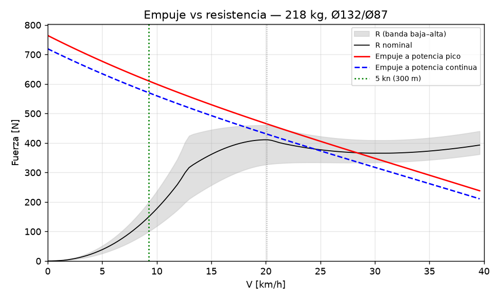

02 — Memoria de cálculo del waterjet (sizing.py)
Todo sale de sizing.py y de los modelos de p1calc/ (hull, planing,
waterjet, motor, power), leyendo inputs.yaml. Los casos estructurales están en
04_diseno/structural_*.py. Ningún número calculado está escrito a mano: las tablas entre marcadores
AUTO y los valores entre marcadores <!--V:…--> los rellena python docgen.py desde resultados/*.json.
Las entradas de inputs.yaml se citan con su etiqueta.
Etiquetas: [VERIFICADO: fuente] · [CALCULADO] · [ESTIMADO: base] · [SUPUESTO].
Lectura honesta. Con 218 kg, el casco leído del plano y la
batería que cumple ≤ 50 V, el modelo no asegura que el bote planee. El margen de empuje se exige de 0 hasta el
planeo pleno (27.1 km/h, donde la eslora deja de limitar, §3), y da
-8% con la banda alta (se piden ≥ 10 %) y
3% con la nominal (estado del optimizador:
sin_solucion_dura, ninguna combinación de 48 V cumple). Con la banda alta, a fondo, el bote
pasa la joroba pero se queda en 21.8 km/h, en la transición, sin llegar
a planeo pleno (¿llega?: NO); y con potencia continua cae a
17.8 km/h, por debajo del inicio del planeo
(20.1 km/h): se cae del planeo (¿se sostiene?:
NO). Con la banda nominal llega a planeo pleno a fondo y se sostiene
en planeo con potencia continua a 24.4 km/h (por ratos
28.3 km/h), contra el objetivo de 30 km/h. El motivo es el casco: es corto
para su peso y Savitsky da una eslora mojada mayor que el fondo en todo el rango de planeo (§3), así que la resistencia
entre 20 y 35 km/h es [ESTIMADO] con un método propio. Nada de esto tiene base validada hasta la prueba T4 (06): la
V máx. sostenida va de 17.8 a
28.6 km/h según la banda. El cambio más chico que devuelve el margen al
10 % con la banda alta es bajar la masa total (21 kg menos) o un fondo más
largo que el leído (L_wl ≥ 1,96 m): ninguno es un cambio de la propulsión;
son mediciones pendientes (PENDIENTES P0.1) o peso (§3.2). Y antes que la velocidad está la estabilidad:
GM = 0.009 m (§2). Eso bloquea la navegación (D-04).
0. Resumen
| Magnitud | Valor | Etiqueta |
|---|---|---|
| Estado del optimizador | sin_solucion_dura | [CALCULADO] |
| Motor / controlador / batería | Maytech MTI120116 150 KV (inrunner refrigerado por agua, 10–16S) / Flipsky FSESC 75350 con caja de agua (VESC, filtro de fase, IP65) / 2 × LiTime 36 V 60 Ah Golf Cart en paralelo (12S2P, BMS 2 × 120 A) | [CALCULADO: optimizador] |
| Masa total / LCG desde el espejo | 218 kg / 1.11 m | [CALCULADO] |
| Calado / GM / escora con el piloto 0,1 m a un lado | 286 mm / 9 mm / 78° | [CALCULADO] |
| Eje del impulsor bajo la flotación (cebado) | 171 mm (ceba) | [CALCULADO] |
| Impulsor / cubo / tobera | Ø132 / Ø66 / Ø87 mm | [CALCULADO] |
| Punto de diseño de la bomba | 43.6 km/h, 5073 rpm, φ 0.267, ψ 0.071, Ω_s 5.77 | [CALCULADO] |
| ¿Llega a planeo pleno (27.1 km/h) con la banda high? / margen mínimo 0–planeo pleno (a qué V) | NO / -8 % (27.0 km/h) — NO cumple el mínimo de 10% | [CALCULADO] |
| Puntos de planeo con Savitsky válido (L_K ≤ L_wl, λ ≤ 4, τ 2–15°) | 0 de 23 (el resto: limitado por eslora) | [CALCULADO; método ESTIMADO] |
| Tiempo de 0 a planeo pleno (banda nominal / alta) | 22.8 s / no llega | [CALCULADO] |
| ¿Se sostiene en planeo con potencia continua? (banda baja / nominal / alta) | sí / sí / NO | [CALCULADO; R ESTIMADO] |
| V máx. sostenida (potencia continua, banda nominal) | 24.4 km/h (objetivo 30) | [CALCULADO] |
| V máx. sostenida, banda baja – alta de R (sin validar hasta T4) | 17.8 – 28.6 km/h | [CALCULADO; R ESTIMADO] |
| P de batería a V máx. / a 5 kn | 6723 W / 1702 W | [CALCULADO] |
| Empuje a punto fijo / en reversa | 765 N / 217 N | [CALCULADO] |
| Autonomía a V máx. / a 5 kn | 37 min (15.1 km) / 2.4 h | [CALCULADO] |
| Energía de la misión requerida / nominal | 3376 / 4608 Wh | [CALCULADO] |
| Cavitación S a V máx. (límite) | 3.19 (3.5) | [CALCULADO] |
| Velocidad periférica máx. | 28.9 m/s | [CALCULADO] |
| Corriente pico de batería / límite de fase | 192 A / 292 A | [CALCULADO] |
| I_q pico (FOC) / l_current_max / margen | 287 A / 292 A / 2 % | [CALCULADO; convención bus_foc SUPUESTO] |
| Motor a V máx. sostenida (estacionario) | 49 °C (máx. 120) | [CALCULADO] |
| Eje Ø / FS estático / FS fatiga | 20 mm / 4.0 / 9.2 | [CALCULADO] |
| Rodamientos L10 a V máx. / vel. crítica / sello | 762186 h / 3.8× n máx. / 4.4 m/s | [CALCULADO] |
Cadena de cálculo: masas (§1) → hidrostática y cebado (§2) → R(V) (§3) → bomba diseñada para el motor y equilibrio motor–bomba–sistema a cada V (§4) → energía, térmico (§5) → eléctrico (§6) → mecánico (§7) → cargas (§8) → estructural (§9). El optimizador (§4.3) recorre motor × controlador × batería × Ø de impulsor × relación de tobera × potencia de diseño, y elige la combinación más barata que cumple las restricciones duras.
1. Masas y centro de gravedad
Modelo (p1calc/hull.py, mass_items, mass_summary): x hacia proa desde la cara exterior del
espejo, z hacia arriba desde la quilla.
m = Σ mᵢ · LCG = Σ mᵢ·xᵢ / m · VCG = Σ mᵢ·zᵢ / m
| Ítem | kg | x [m] | z [m] | Etiqueta de la entrada |
|---|---|---|---|---|
| Casco con cubierta, consola y asiento | 38.0 | 0.95 | 0.22 | [ESTIMADO: research/R10b §4.2: 30–45 kg] |
| Piloto | 90.0 | 1.38 | 0.55 | [SUPUESTO: 80–100 kg; asiento del plano, R10b §4.4] |
| Batería (selección) | 39.6 | 1.28 | 0.18 | masa [ESTIMADO: R11 §3.2]; posición [SUPUESTO: más a popa que en el plano] |
| Motor (selección) | 4.4 | 0.74 | 0.16 | masa [VERIFICADO: R11 §1.2]; posición [CALCULADO: CAD] |
| Unidad de jet (toma, bomba, tobera, dirección, bucket, tren) | 24.9 | 0.25 | 0.12 | [CALCULADO: masa del CAD, manifest.json] |
| Controlador, contactor, fusible, cables | 6.0 | 0.90 | 0.30 | [ESTIMADO: R10b §4.2] |
| Agua retenida en toma y bomba | 4.0 | 0.30 | 0.10 | [ESTIMADO: R10b §4.2] |
| Equipo de seguridad | 6.0 | 1.60 | 0.25 | [ESTIMADO: R10b §4.2] |
| Flotación fija + achique | 5.0 | 1.20 | 0.30 | [ESTIMADO: ~100 L de espuma, R10b H5] |
Resultado [CALCULADO]: m = 217.9 kg; LCG = 1.114 m desde el espejo; VCG = 0.339 m sobre la quilla; máquinas (motor + batería + jet + controlador, para la capacidad de §2.3) = 74.9 kg.
-
La masa del jet la toma
sizing.pydel CAD vigente (manifest.json → totals.jet_unit_mass_kg, hoy 25.67 kg). Si el CAD cambia, hay que volver a correrrun_all.py: la fila "Unidad de jet" de arriba es la que usó la última corrida desizing.py. -
Los 150 kg del plano de Jorge no cierran (R10b §4.2: 165–242 kg con 3 kWh LFP). El piloto pesa 90 kg de los 218 y es la entrada más incierta después de la potencia del motor (§10).
2. Hidrostática, estabilidad, capacidad y cebado
2.1 Calado
Sección (hull._half_width, vista trasera del plano, R10b §4.3): fondo con astilla muerta β hasta un
ancho de fondo b_f, abre hasta la manga en el pantoque B_ch a la altura z_ch y sigue hasta la manga B en
la borda (z_g). Longitudinalmente, un coeficiente de bloque C_b:
∇ = m/ρ = C_b · L_wl · A_sec(T) → T por bisección KB = centroide numérico de A_sec(T) · BM = C_I · L_wl · B_wl³ / ∇ · GM = KB + BM − KG
| Entrada | Valor | Etiqueta |
|---|---|---|
| L_wl | 1,75 m | [ESTIMADO: R10b §4.3, largo de fondo a escala] |
| b_f / B_ch / z_ch | 0,42 m / 0,69 m / 0,25 m | [ESTIMADO: R10b §4.3] |
| B / z_g / espejo | 0,80 m / 0,52 m / 0,42 m | [VERIFICADO: cotas del plano de Jorge] |
| β | 8° | [ESTIMADO: R10b §4.4 usó 5–10°] |
| C_b / C_I | 0,80 / 0,065 | [ESTIMADO] / [ESTIMADO: R10b §4.3, forma de flotación supuesta] |
| ρ | 1013 kg/m³ | [CALCULADO: R07 §2.5, 18 PSU] |
Resultado [CALCULADO]: ∇ = 0.215 m³; T = 0.286 m; B_wl = 0.705 m; francobordo en el espejo = 0.134 m; desplazamiento con el agua al borde del espejo = 357 kg.
2.2 Estabilidad inicial
KB = 0.163 m, BM = 0.185 m, KG = 0.339 m → GM = 0.009 m [CALCULADO].
Escora por correr al piloto una distancia d (lineal, ángulo chico; hull.heel_for_offset):
φ = atan( m_piloto · d / (Δ · GM) )
Con d = 0,1 m: φ = 78° [CALCULADO]. El modelo lineal no vale a ese ángulo; lo que dice es que el bote no tiene estabilidad inicial útil: vuelca al subir, al reabordar desde el agua o con un movimiento brusco del piloto. Con R10b H1 (GM de −113 a +90 mm según dónde va sentado el piloto) la conclusión es la misma. La propulsión no lo arregla; hace falta más manga en la flotación (caja: GM ≈ +144 mm con B_wl 0,9 m [CALCULADO: R10b §4.3]), flotadores laterales o un asiento más bajo. Es el riesgo n.º 1 (03 §5, D-04) y se cierra con el ensayo de escora E1 de R13 §5 antes de la primera prueba con motor.
2.3 Capacidad (33 CFR 183.33, referencia)
Fórmula para botes con motor interior [VERIFICADO: R10b §4.3, law.cornell.edu], no obligatoria en DK:
W = máx[ Δ_max/5 − m_casco/5 − 4·m_máquinas/5 ; (Δ_max − m_casco)/7 ]
W₁ = 4 kg, W₂ = 46 kg → personas + equipo ≤ 46 kg [CALCULADO], menos que un piloto de 90 kg. Por esta regla el casco, tal como se leyó del plano, no tiene capacidad para su propio piloto. Confirma H1/H6 de R10b: el casco es chico para la carga.
2.4 Cebado de la bomba
Regla: el eje del impulsor tiene que quedar bajo la flotación en reposo [VERIFICADO: R10a §3.2, HamiltonJet]; el proyecto pide ≥ 20 mm de margen (R10a §8). Eje del impulsor a 0.115 m de la quilla [CALCULADO: R10a §5.2, CAD], calado 0.286 m → eje 0.171 m bajo la flotación: ceba [CALCULADO]. El margen es grande porque el casco es chico para la masa; con el casco medido (PENDIENTES P0.1) puede cambiar.
3. Resistencia al avance
Modelo (p1calc/planing.py), con Fn∇ = V/√(g·∇^⅓):
| Tramo | Rango | Ecuación | Etiqueta |
|---|---|---|---|
| Desplazamiento y joroba | Fn∇ ≤ 1,5 | R/Δ = r_joroba · (Fn∇/1,5)^2,2, r_joroba = 0,10 / 0,15 / 0,20 (bandas baja / nominal / alta) | [ESTIMADO: R10b §4.4, Savitsky 2003 × 1–2 para cascos rechonchos; R12 §6.3 da 0,12–0,17 con Mercier–Savitsky] |
| Planeo | Fn∇ ≥ 2,3, punto válido | Savitsky 1964 con openplaning (trimado de equilibrio, fricción ITTC-57 con rugosidad, aire), × 0,92 / 1,00 / 1,12 |
Ecuaciones [VERIFICADO: R12 §6.1, R10b §4.4]; banda [ESTIMADO: dispersión de 6 cascos, R10b] |
| Planeo con casco corto | Fn∇ ≥ 2,3, Savitsky con L_K > L_wl | "Savitsky limitado por eslora": equilibrio vertical con L_K = L_wl (τ el que sostiene el peso); banda baja = Savitsky libre × 0,92, nominal = limitado, alta = limitado × 1,12 | [ESTIMADO: método propio, sin validar; el momento de cabeceo no cierra] |
| Transición | 1,5 < Fn∇ < 2,3 | Interpolación monótona (PCHIP) entre la joroba y el primer punto de planeo | [ESTIMADO] |
Entradas de Savitsky: b = 0,60 m [ESTIMADO: R10b §4.4], β = 8°, LCG y VCG de §1, r_g = 0,50 m, empuje horizontal a 0,11 m [CALCULADO: eje del jet], aire 1,1 × 0,5 m con C_D 0,9 [ESTIMADO: R10b], rugosidad 150 µm, ν = 1,35·10⁻⁶ m²/s [ESTIMADO].
Validez de Savitsky [VERIFICADO: R12 §6, avisos de openplaning]: 2° ≤ τ ≤ 15°, λ ≤ 4, 0,60 ≤ C_V ≤ 13; y además la eslora mojada en la quilla L_K no puede superar el largo del fondo L_wl (1.75 m [ESTIMADO]): Savitsky supone un prisma más largo que la zona mojada. Con este casco el equilibrio libre da L_K > L_wl en todo el rango de planeo (0 de 23 puntos válidos): L_K = 2.08 m a 20.1 km/h, 1.87 m a 25.6 km/h y 1.77 m a 33.9 km/h, con C_Δ = 1.00 y el LCG al 64% del fondo [CALCULADO]. Es decir: para sostener 217 kg con ese trimado el bote necesitaría un fondo más largo del que tiene; en la realidad se hunde más de proa o trima más, y eso Savitsky no lo describe. No encontré un método abierto para ese régimen (Savitsky–Brown 1976 y Blount–Fox 1976 no están abiertos, R12 §6.3; Mercier–Savitsky cubre solo Fn∇ 1–2, o sea hasta ~17 km/h). Por eso:
-
Nominal = Savitsky limitado por eslora (
planing.savitsky_length_limited) [ESTIMADO]: las mismas ecuaciones de Savitsky/openplaning, pero con L_K = L_wl fijo y el trimado τ que da equilibrio vertical. Sale más trimado y más resistencia que el libre a baja velocidad, y converge con el libre por encima de ~35 km/h (L_K libre → L_wl). El momento de cabeceo queda sin cerrar (proa abajo): lo tomaría la proa mojándose, que no está modelada. -
Banda ensanchada donde el punto no es válido: baja = Savitsky libre × 0,92 (optimista: como si el fondo fuera más largo), alta = limitado × 1,12.
-
La validez de cada punto (L_K, L_K libre, λ, τ, método) queda en
sizing.json → resistance.savitsky.
Resultado [CALCULADO]: joroba en 13.1 km/h (Fn∇ = 1,5); planeo desde 20.1 km/h (Fn∇ = 2,3). Puntos de planeo (banda nominal):
| V [km/h] | R [N] | τ [°] | Presión [N] | Fricción [N] | Aire [N] | L_K [m] (libre) | λ | Método |
|---|---|---|---|---|---|---|---|---|
| 20.1 | 411 | 9.5 | 347 | 56 | 8 | 1.75 (2.08) | 2.78 | Savitsky limitado por eslora |
| 25.6 | 375 | 7.4 | 272 | 89 | 13 | 1.75 (1.87) | 2.74 | Savitsky limitado por eslora |
| 29.7 | 366 | 6.2 | 229 | 118 | 19 | 1.75 (1.80) | 2.71 | Savitsky limitado por eslora |
| 38.0 | 385 | 4.5 | 167 | 186 | 31 | 1.75 (1.76) | 2.63 | Savitsky limitado por eslora |
-
La curva R(V) es casi plana entre 20 y 35 km/h: el fondo es angosto para el peso (∇/b³ alto, trimados de 6–8°, R10b §4.4). Por eso la V máx. depende tanto de la potencia: unos pocos newtons de empuje de más o de menos mueven el cruce T = R varios km/h (§10).
-
Planeo pleno y ventana del margen. "Planeo pleno" es la V desde la que la limitación de eslora deja de pesar: el Savitsky limitado y el libre difieren menos de 2 % [SUPUESTO:
resistance.full_planing_tol], interpolado entre nodos: 27.1 km/h. El margen de empuje se exige de 0 hasta ahí (joroba + transición), no solo hasta el primer nodo de Savitsky (Fn∇ = 2,3): antes la ventana se cortaba en 20.1 km/h y el margen seguía cayendo después (auditoría R2-C01). Con la ventana larga el resultado ya no depende del corte arbitrario fn_planing (sensibilidad 2,0–2,7 en §10). "Llega a planeo pleno" = el equilibrio a fondo está más allá de esa V; "se sostiene en planeo" = con potencia continua el equilibrio queda por encima de 20.1 km/h. -
Banda de diseño. El planeo se verifica con la banda alta (empuje a potencia pico ≥ 1,10 × R de 0 al planeo pleno [SUPUESTO:
operation.plane_margin_frac]). En el régimen limitado por eslora (todo el planeo de este casco) el ×1,12 de la banda alta es [SUPUESTO]: viene de la dispersión de cascos a 30 km/h con Savitsky válido, no de este régimen; la sensibilidad la lleva de 1,00 a 1,25 (§10). La V máx. se informa con la banda nominal y, porque el tramo de planeo no está validado, también con las bandas baja y alta (sizing.json → vmax_band): sostenida 17.8 / 24.4 / 28.6 km/h y por ratos 21.8 / 28.3 / 31.1 km/h (bandas alta / nominal / baja) [CALCULADO; R ESTIMADO]. La V máx. no tiene base validada hasta la prueba T4 (06).
Curva a fondo (potencia pico, banda alta, batería nominal) y figura
figuras/empuje_resistencia.png:

| V [km/h] | R diseño [N] | T pico [N] | rpm | P bat [W] | I bat [A] | S | Limita |
|---|---|---|---|---|---|---|---|
| 0 | 0 | 765 | 4045 | 7373 | 192 | 3.50 | corriente de batería |
| 4 | 25 | 700 | 4046 | 7373 | 192 | 3.49 | corriente de batería |
| 7 | 115 | 642 | 4051 | 7373 | 192 | 3.48 | corriente de batería |
| 11 | 280 | 588 | 4059 | 7373 | 192 | 3.46 | corriente de batería |
| 14 | 440 | 538 | 4069 | 7373 | 192 | 3.43 | corriente de batería |
| 18 | 458 | 491 | 4082 | 7373 | 192 | 3.40 | corriente de batería |
| 22 | 446 | 446 | 4097 | 7373 | 192 | 3.36 | corriente de batería |
| 25 | 421 | 404 | 4113 | 7373 | 192 | 3.32 | corriente de batería |
| 29 | 410 | 362 | 4129 | 7373 | 192 | 3.27 | corriente de batería |
| 32 | 411 | 321 | 4147 | 7373 | 192 | 3.22 | corriente de batería |
| 36 | 421 | 279 | 4164 | 7373 | 192 | 3.15 | corriente de batería |
| 40 | 440 | 238 | 4181 | 7373 | 192 | 3.09 | corriente de batería |

3.1 Velocidad legal y tope de ERPM
Dentro de 300 m de la costa el límite es 5 kn [VERIFICADO: R07, R13 §3]. Dos cálculos:
-
Consumo a 5 kn (
JetDrive.for_thrust): rpm tal que T = R_alta(5 kn) con el piloto de diseño; de ahí P de batería y autonomía. Es la potencia de la energía de la misión (§5.2), del lado conservador. Esas rpm están por encima del tope de COSTA (el tope se calcula con el piloto liviano): con el perfil COSTA el piloto de diseño no llega a 5 kn; lo que da de verdad está en las filas "COSTA a fondo" de la tabla. -
Tope de rpm del perfil "costa" (D-18): el caso que más rápido va con una rpm dada es el piloto liviano (198 kg en total con 70 kg [SUPUESTO]), banda baja y batería llena. Se busca la rpm que da T = R_baja(5 kn) y se pasa a ERPM con los pares de polos del motor. Comprobación [CALCULADO]: con esa rpm, T < R_liviano,baja(V) para toda V > 5 kn (exceso máximo -5.1 N).
| Magnitud | Valor | Etiqueta |
|---|---|---|
| Límite legal a < 300 m de la costa | 9.26 km/h (5 kn) | [VERIFICADO: research/R07, R13] |
| Tope de rpm 'modo costa' (piloto liviano, 198 kg, banda baja, batería llena) | 1849 rpm / 9245 ERPM | [CALCULADO] → VESC l_max_erpm en el perfil de costa |
| COSTA a fondo, piloto liviano (banda baja, batería llena) | 9.3 km/h, 689 W | [CALCULADO] (el caso del tope) |
| COSTA a fondo, piloto de diseño (banda nominal / alta, batería nominal) | 7.8 / 7.0 km/h, 695 / 698 W (autonomía 5.9 h) | [CALCULADO] |
| P de batería para ir a 5 kn con el piloto de diseño (banda alta) | 1702 W a 2501 rpm — por encima del tope de COSTA: solo con el perfil ABIERTO | [CALCULADO] (energía de la misión, conservador) |
| Autonomía a esa potencia | 2.4 h | [CALCULADO] |
-
Pares de polos (
inputs.yaml, hoy 5 [VERIFICADO: página de Maytech, 12N10P]). El ERPM del VESC es rpm × pares de polos. Si el motor tiene otro número, el tope queda mal por el mismo factor: contarlo con VESC Tool (detección del motor) antes de cargarl_max_erpm. -
El tope es para 5 kn. En Sønderborg Havn (Als Sund) el límite es 4 kn y en las marinas 3 kn [VERIFICADO: R13 §3]; ahí se navega a mano por debajo del tope. Un perfil de 4 kn no está calculado.
-
Prueba de cierre: GPS, ida y vuelta, piloto liviano, batería llena: media ≤ 9,0 km/h [SUPUESTO: margen]; si no,
l_max_erpmnuevo = actual × 9,0 / v medida.
3.2 Margen de 0 a planeo pleno: qué lo devuelve al 10 %
Con la combinación elegida, el margen mínimo de 0 a planeo pleno (banda alta, batería nominal) es -7.7% a 27.0 km/h: el empuje a fondo iguala a la resistencia a 21.8 km/h, en plena transición limitada por eslora, y no alcanza el planeo pleno. No es el pico de la joroba (R/Δ) sino la transición: la R/Δ crítica de la joroba es no hay: aun con R/Δ = 0,05 el margen queda < 10% (lo limita la transición joroba–planeo, no el pico de la joroba), y ninguna combinación de impulsor, tobera ni punto de diseño llega al 10 % (§4.3). Con potencia continua y la banda alta el bote se cae del planeo (equilibrio 17.8 km/h, por debajo de 20.1 km/h). Con la banda nominal el margen es 3.4%: llega a planeo pleno a fondo (sí) pero tarda 23 s (criterio de §11: ≤ 15 s), y con potencia continua se sostiene en planeo (sí) a 24.4 km/h, todavía en la transición (¿planeo pleno?: NO).
Qué lo devuelve al 10 % con la banda alta (sizing.hump_recovery, la bomba se rediseña en cada caso) [CALCULADO]:
| Cambio | Margen 0–planeo pleno (banda alta) | Comentario |
|---|---|---|
| Masa total | ≥ 10 % con 21 kg menos | Casco, batería o piloto; pesar el casco (P0.1) |
| Largo del fondo | ≥ 10 % con L_wl ≥ 1,96 m | El 1,75 m es [ESTIMADO] leído del plano; medir (P0.1) |
| Piloto de 70 kg | 8.1% | El piloto real decide |
| Corriente de batería al 100 % del BMS | -3.2% | Pasan a limitar la corriente de fase (I_q) y la cavitación; y deja el BMS sin margen |
| Banda nominal en vez de la alta | 3.4% | Es aceptar menos margen, no un cambio |
Con la batería descargada el margen es -13.1% (alta) y -2.6% (nominal). La prueba que lo decide es T4.1 (06): tiempo de 0 a planeo con el piloto real y la batería al 20 %.
4. Waterjet
4.1 Cantidad de movimiento y curva del sistema
Modelo (p1calc/waterjet.py, JetGeometry), alturas en metros de columna:
V_in = V·(1 − w) · V_j = Q / (C_c·A_n) · V_g = Q / A_g H_sys = (1 + K_n)·V_j²/2g − η_in·V_in²/2g + K_g·V_g²/2g + h_j T = ρ·Q·(V_j − V_in)·(1 − t) · η_chorro = T·V / P_eje
| Entrada | Valor | Etiqueta |
|---|---|---|
| C_c (tobera) | 0,98 | [ESTIMADO: tobera cónica pulida] |
| K_n (pérdida de tobera) | 0,02 | [VERIFICADO: R12 §1, Bulten ec. 2.56] |
| η_in (recuperación en la toma) | 0,70 | [ESTIMADO: R03 S9 "~70 %", valor general de tomas enrasadas, no de esta toma] |
| K_g (rejilla) / A_g | 0,40 / 3,15 × A_impulsor | [ESTIMADO: R10a §4, Kirschmer 0,2–0,6] / [CALCULADO: R10a §5.2] |
| w (estela) / t (deducción) / h_j | 0 / 0 / 0 m | [SUPUESTO: R10b §4.5]. w = 0 es conservador (no recupera estela); t = 0 no lo es: con t > 0 el empuje útil baja (1 − t). Sin fuente abierta con valores para jets chicos; sensibilidad 0–0,10 en §10 (D-22) |
| Garganta de la toma (IVR) | Ø = 1,11·D (círculo) | [CALCULADO: R10a §5.2; waterjet.throat_d_ratio, la misma que usa el CAD] |
4.2 Bomba fuera de diseño y motor
Bomba (Pump): impulsor axial de diámetro D y cubo ν·D; U = π·D·n; φ = Q/(A_anular·U); ψ = g·H/U².
ψ(φ) = ψ_d · [1 + s·(1 − φ/φ_d)] η(φ) = η_d · [1 − c·(φ/φ_d − 1)²] ≥ η_mín P_eje = ρ·g·Q·H/η
con s = 1,5 (ψ de cierre ≈ 2,5·ψ_d), c = 2,5, η_d = 0,72, η_mín = 0,20 [ESTIMADO: R12 §2, §5.3; η_d de la correlación de Bulten, 0,756, menos holgura y rugosidad]. El punto de funcionamiento a (n, V) es la intersección ψ(φ)·U²/g = H_sys(Q, V) (bisección en φ).
Motor y controlador (p1calc/motor.py, modelo de CC equivalente):
K_t = 60/(2π·KV) · I = Q_m/K_t + I₀ · V_m = ω/K_V,rad + I·R · P_bat = V_m·I/η_ESC · duty = V_m/V_bat ≤ 0,95
Corriente del VESC (FOC). El modelo de CC usa K_t = 1/KV_rad sobre la corriente de CC equivalente. El VESC
limita la amplitud de I_q (l_current_max) y el par es 1,5·pp·λ·I_q. Si el KV de catálogo está referido a la
tensión de bus (rpm en vacío = KV·V_bus), λ·pp = 1/(√3·KV_rad) y K_t,FOC = (√3/2)/KV_rad, así que
I_q = I_CC/0,866 [SUPUESTO: motor.kt_convention = bus_foc; medir λ con
VESC Tool (K_t = 1,5·pp·λ) y cargarlo como flux_linkage_wb]. El límite de fase se aplica sobre I_q: a punto
fijo I_CC = 248 A → I_q = 287 A;
pico 287 A contra 292 A
(margen 1.8%) [CALCULADO]. Con esa convención el par a
l_current_max es 16.1 N·m; el eje y el pasador (§7) se
siguen calculando con K_t de CC (18.6 N·m), la envolvente conservadora mientras la
convención sea un supuesto.
R en caliente = 1,24 × R fría [ESTIMADO]. A cada V, JetDrive.full_throttle busca la mayor rpm que
respeta duty, corriente de fase (sobre I_q), corriente de batería y límite de potencia; si S supera el límite de
cavitación, baja las rpm (§4.6). Límites [CALCULADO]: fase 292 A (controlador / 1,2),
batería 192 A (80 % del BMS), P_bat continua
6723 W (P_cont del motor / η_motor·η_ESC), P_bat pico
13447 W.
Qué limita de verdad. En la curva a fondo el limitante es la cavitación a muy baja velocidad y, apenas el bote se mueve, la corriente de batería (columna "Limita" de §3 y tabla de §4.6). Los 13447 W pico del motor no se usan nunca: el BMS de 2 × 120 A corta antes. En crucero limita la potencia continua del motor, que Maytech no publica [ESTIMADO: 6 kW] (D-12).
4.3 Optimizador y restricciones duras
Variables: motor × controlador × batería de la misma clase de tensión; Ø impulsor ∈ {100, 108, 120, 132} mm;
D_tobera/D ∈ {0,58 … 0,74}; f ∈ {0; 0,5; 1} [SUPUESTO: waterjet.*_options].
Diseño de la bomba (design_pump, D-07): el impulsor se diseña para absorber
P_d = [P_cont + f·(P_máx − P_cont)]·η_mec a plena tensión, en la V más alta en que el empuje con P_d
iguala a R nominal. n_d = rpm del motor a P_d con duty máximo y batería nominal. Así, con motor directo, la
bomba puede tomar más que la potencia continua en la joroba, y el controlador limita en crucero.
| Restricción dura | Criterio | Etiqueta |
|---|---|---|
| Tensión | V nominal ≤ 50 V; motor, controlador y batería de la misma clase; V_máx batería ≤ 0,95 × V_máx controlador; celdas ≤ máx. del motor | [VERIFICADO: R13 §4, R06] |
| Speedbåd | P_eje pico < 19 kW | [VERIFICADO: R13 §2, BEK 749/2020] |
| Planea | T_pico ≥ 1,10 × R_alta en toda la joroba y cruza a planeo | [SUPUESTO] |
| Energía | E_nominal ≥ E_misión (§5.2) | [SUPUESTO: misión] |
| Cavitación en V máx. | S ≤ 3,5 | [VERIFICADO: R12 §5, Bulten] |
| Velocidad periférica | U_punta ≤ 35 m/s | [VERIFICADO: R10a §4 (S9)] |
| φ_d / Ω_s | 0,15–0,40 / 2,5–6,0 | [ESTIMADO: R10b §4.6] |
| Corriente de batería | I_bat pico ≤ 80 % del BMS | [SUPUESTO] |
| Objetivo de V máx. (blanda) | V máx. sostenida ≥ 30 km/h | [VERIFICADO: plano de Jorge] |
Selección: entre las que cumplen las duras, las que además llegan a 30 km/h (si hay); de esas, las que cuestan ≤ 1,10 × la más barata; desempata la mayor V máx. y el margen en la joroba. Si ninguna cumple las duras, se descartan las que violan tensión o potencia (reglas del proyecto) y se elige la que cumple más restricciones; entre esas, las que quedan a ≤ 1% (puntos porcentuales) del mejor margen en la joroba, y de esas la de mayor V máx. (una banda y no un redondeo: con el redondeo al punto, +0,8 kg de masa del jet cambiaba el impulsor de Ø132 a Ø120 por 0,27 pp de margen, muy por debajo de la incertidumbre de la resistencia; auditoría ronda 3).
Resultado [CALCULADO]: 780 combinaciones evaluadas,
0 cumplen las duras, estado sin_solucion_dura
(con la resistencia corregida de §3 ninguna combinación de 48 V llega al 10 % de margen en la joroba con la banda
alta, §3.2; y ninguna llega a 30 km/h sostenidos). Elegida: Maytech MTI120116 150 KV (inrunner refrigerado por agua, 10–16S) ·
Flipsky FSESC 75350 con caja de agua (VESC, filtro de fase, IP65) · 2 × LiTime 36 V 60 Ah Golf Cart en paralelo (12S2P, BMS 2 × 120 A); impulsor
Ø132, tobera Ø87 (D_t/D =
0.66), f = 1.0; costo del núcleo
(motor + controlador + batería + cargador) 1952 €.
| Motor | Batería | Ø imp | D_t/D | V máx [km/h] | Margen joroba | Costo [€] | Duras OK |
|---|---|---|---|---|---|---|---|
| HPM5000B_48 | LT36_60x1 | 132 | 0.74 | 14.0 | -48 % | 1322 | no |
| HPM5000B_48 | LT36_60x1 | 132 | 0.74 | 13.9 | -48 % | 1322 | no |
| HPM5000B_48 | LT36_60x1 | 132 | 0.70 | 13.9 | -47 % | 1322 | no |
| HPM5000B_48 | LT36_60x1 | 132 | 0.74 | 13.8 | -48 % | 1322 | no |
| HPM5000B_48 | LT36_60x1 | 132 | 0.70 | 13.7 | -47 % | 1322 | no |
| HPM5000B_48 | LT36_60x1 | 120 | 0.74 | 13.7 | -47 % | 1322 | no |
| HPM5000B_48 | LT36_60x1 | 132 | 0.66 | 13.7 | -47 % | 1322 | no |
| HPM5000B_48 | LT36_60x1 | 132 | 0.70 | 13.6 | -48 % | 1322 | no |
| HPM5000B_48 | LT36_60x1 | 120 | 0.74 | 13.6 | -47 % | 1322 | no |
| HPM5000B_48 | LT36_60x1 | 132 | 0.66 | 13.5 | -47 % | 1322 | no |
| HPM5000B_48 | LT36_60x1 | 120 | 0.70 | 13.5 | -47 % | 1322 | no |
| HPM5000B_48 | LT36_60x1 | 132 | 0.62 | 13.5 | -47 % | 1322 | no |
| HPM5000B_48 | LT36_60x1 | 120 | 0.74 | 13.5 | -48 % | 1322 | no |
| HPM5000B_48 | LT36_60x1 | 132 | 0.66 | 13.4 | -47 % | 1322 | no |
| HPM5000B_48 | LT36_60x1 | 120 | 0.70 | 13.4 | -47 % | 1322 | no |
La tabla incluye las combinaciones con el HPM5000B del plano: con su KV de catálogo (91,5 rpm/V) gira más lento que el MTI120116 y la bomba absorbe menos potencia, así que da menos V máx. (R11 §1.3).
4.4 Punto de diseño y triángulos de velocidad
Punto de diseño [CALCULADO]: f = 1.0, P_d = 11760 W a 43.6 km/h y 5073 rpm; Q_d = 0.0959 m³/s, H_d = 8.88 m, φ_d = 0.267, ψ_d = 0.071, Ω_s = 5.77 (axial de Ω_s alta, como anticipó R12 §0), U_punta = 35.1 m/s.
-
El punto de diseño es "virtual". Es lo que la bomba absorbería a plena tensión sin límite de corriente. En servicio la batería limita (§4.2) y la bomba gira entre 4045 y 4127 rpm a fondo (§4.6), con U_punta máx. 28.9 m/s. La V de diseño es la más alta con T(P_d) = R nominal, resuelta por bisección sobre los nodos de resistencia (hasta 50 km/h), sin el tope de 40 km/h de la grilla de prestaciones que antes la recortaba (auditoría R2-C03);
pump.V_design_at_edgeavisa si quedara en el borde. -
Geometría [CALCULADO / SUPUESTO en
inputs.yaml]: 5 álabes, cubo ν = 0.50 (Ø66), 7 álabes de estator (coprimo con 5), holgura de punta 0.40 mm (0,3 % de D, con anillo de desgaste torneado en sitio, R12 §2.7).
Triángulos (Pump.design_report; torbellino libre r·c_u = cte, entrada sin giro):
ΔH_th = H_d/η_d · c_m = Q_d/A_anular · c_u2 = g·ΔH_th/u · β₁ = atan(c_m/u) · β₂ = atan(c_m/(u − c_u2)) α₂ (entrada al estator) = atan(c_m/c_u2) · de Haller = w₂/w₁ ≥ 0,7 [ESTIMADO: R12 §9]
| Sección | r [mm] | u [m/s] | c_m [m/s] | β1 [°] | β2 [°] | desvío [°] | entrada estator [°] | de Haller |
|---|---|---|---|---|---|---|---|---|
| cubo | 33.0 | 17.5 | 9.3 | 28.1 | 41.3 | 13.3 | 53.5 | 0.71 |
| medio | 52.2 | 27.7 | 9.3 | 18.6 | 21.8 | 3.2 | 64.9 | 0.86 |
| punta | 66.0 | 35.1 | 9.3 | 14.9 | 16.5 | 1.5 | 69.7 | 0.91 |
El cubo es la sección más cargada: de Haller 0.71 y desvío
13.3°. Con cubo 0,40 no cerraba (D_f 0,60, R12 §0); por eso
0,50 (D-06). Los ángulos de pala del CAD agregan 3° de incidencia sobre β₁ (params_bomba.py).
4.5 Cavitación
NPSH_a = (p_atm − p_v)/(ρ·g) + h_sum(V) + η_in·V_in²/2g − K_g·V_g²/2g S = ω·√Q / (g·NPSH_a)^¾ ≤ 3,5 · σ_punta = 2g·NPSH_a / (U² + c_m²)
p_v = 2984 Pa (agua a 24 °C, peor caso) [ESTIMADO: R07]; S_lím = 3,5 de diseño (comercial ≈ 4,0)
[VERIFICADO: R12 §5.1]. h_sum(V) = inmersión del eje bajo la superficie (Resistance.h_sub) [ESTIMADO]: la
estática (§2.4) hasta la joroba; en planeo, calado del espejo de Savitsky (L_K·sen τ) menos la subida de la quilla
hasta la cara del impulsor (x_if·tan τ) menos la altura del eje; lineal entre ambos. A V máx. sostenida
h_sum = 0.086 m (en reposo 0.171 m):
pesa ~1 % en el NPSH, casi nada en S.
| Punto | V [m/s] | rpm | S | σ_punta | IVR (garganta) | Etiqueta |
|---|---|---|---|---|---|---|
| Punto fijo (a fondo) | 0.00 | 4045 | 3.50 | 0.239 | — | [CALCULADO] |
| 5 kn (crucero legal) | 2.57 | 2501 | 1.69 | 0.639 | 0.97 | [CALCULADO] |
| V máx. sostenida | 6.79 | 3989 | 3.19 | 0.281 | 0.62 | [CALCULADO] |
| V máx. por ratos (pico) | 7.87 | 4127 | 3.28 | 0.274 | 0.56 | [CALCULADO] |
- El margen es chico en todo el rango alto, como anticipaba R10b H20 (σ_punta 0,28–0,35).
- IVR (ITTC) = V media en la garganta de la toma (círculo Ø 1,11·D) / V del bote [VERIFICADO definición: R10a §4]. A 5 kn queda > 1 → punto de estancamiento del lado casco del labio; por eso el labio es redondeado y generoso (R10a §4). En V máx. sostenida da 0.62 (en la entrada del impulsor, círculo Ø D: 0.76) y por ratos 0.56: por debajo de ~0,65, en la zona de separación del techo de la rampa [VERIFICADO el umbral: R10a §4, ITTC], como ya anticipaba R10a §6 (0,54–0,59 a 30 km/h). La versión anterior de este cálculo usaba el área anular del impulsor y daba ≈ 1 (sobrestimaba ×1,33). Mitigación: rampa de 27° con techo de curvatura continua (ya en el CAD); generadores de vórtices opcionales (R10a §6); verificar con hilos en el techo y el labio (R10a §8.9) en T4.
4.6 Ley de control anti-cavitación a baja velocidad
"Full power cannot be used at low vessel speeds" [VERIFICADO: R10a S4]. En el modelo (cav_limited), a
cada V la rpm se limita a la mayor que da S ≤ 3,5:
n_máx(V) = máx{ n : S(n, V) ≤ S_lím }
| V [m/s] | rpm máx. | S | Empuje [N] | Limita |
|---|---|---|---|---|
| 0.00 | 4045 | 3.50 | 765 | corriente de batería |
| 1.20 | 4047 | 3.49 | 688 | corriente de batería |
| 2.10 | 4052 | 3.48 | 636 | corriente de batería |
| 3.00 | 4059 | 3.46 | 588 | corriente de batería |
Implementación propuesta (el VESC no conoce la velocidad del bote):
-
Perfil abierto: tope de rpm = rpm máx. con S ≤ 3,5 a punto fijo, exportado como
sizing.json → cavitation_cap(4047 rpm = 20237 ERPM con 5 pares de polos) [CALCULADO]; es la entrada paral_max_erpmdel perfil abierto (04_diseno/electronica/). Las rpm a fondo en planeo son 4127 rpm: con el tope la V máx. por ratos (banda nominal) baja de 28.3 a 26.3 km/h; la sostenida no cambia (gira por debajo del tope). Es el precio de garantizar S ≤ 3,5 en la arrancada. -
Detección de descarga (cavitación o aire en la toma): rpm que sube con la corriente que cae, sin mover el acelerador → bajar el duty [VERIFICADO como síntoma: R10a S4 p.29; umbral SUPUESTO].
-
P2: límite por velocidad GPS con telemetría (07 §2.3).
El tope del perfil abierto sale de cavitation_cap (VESC l_max_erpm); la detección de descarga queda como
ajuste y se prueba en la rampa de punto fijo (T2.5).
5. Motor, controlador, batería, energía, autonomía y térmico
5.1 Puntos de funcionamiento
| Punto | V [m/s] | rpm | P_eje [W] | P_bat [W] | I_bat [A] | η_bomba | η_chorro | Limita |
|---|---|---|---|---|---|---|---|---|
| V máx. sostenida (P continua, banda nominal) | 6.79 | 3989 | 5926 | 6723 | 175 | 0.71 | 0.44 | potencia |
| V máx. por ratos (P pico, banda nominal) | 7.87 | 4127 | 6494 | 7373 | 192 | 0.72 | 0.44 | corriente de batería |
| 5 kn (banda alta) | 2.57 | 2501 | 1503 | 1702 | 44 | 0.70 | 0.34 | — |
η_chorro = T·V/P_eje. A 5 kn el jet rinde poco: es la debilidad de la arquitectura (03 §2, criterio eficiencia_5kn).
Arranque y planeo [CALCULADO]: empuje a punto fijo 765 N; margen mínimo de 0 a planeo pleno -7.7% (banda alta) y 3.4% (nominal); tiempo de 0 a planeo pleno con la banda nominal 22.8 s (con la alta no llega) (integrando (T − R)/(1,10·m), masa agregada 10 % [ESTIMADO]).
Tensión de batería. Cada columna usa una sola banda: el margen y "¿llega a planeo pleno?" con la alta y con la nominal; la V máx. sostenida con la nominal ("no planea" si con potencia continua queda por debajo del inicio del planeo). La V máx. casi no cambia porque limita la potencia; lo que cambia es el margen.
| Batería | V_bat [V] | Margen / ¿planeo pleno? (alta) | Margen / ¿planeo pleno? (nominal) | V máx. sostenida, nominal [km/h] |
|---|---|---|---|---|
| Descargada | 36.0 | -13.1% / NO | -2.6% / NO | 24,4 |
| Nominal | 38.4 | -7.7% / NO | 3.4% / sí | 24,4 |
| Llena | 43.8 | -3.2% / NO | 8.4% / sí | 24,4 |
Con la banda alta el margen es negativo con cualquier tensión de batería; con la nominal, negativo con la batería descargada: con la batería casi vacía el bote puede no salir a planeo (§3.2). Prueba: planeo con la batería al 20 % (T4.1).
5.2 Energía de la misión y autonomía
E_req = (P_bat,máx·t_rápido + P_bat,5kn·t_5kn)·(1 + reserva) / DoD
con t_rápido = 0,25 h, t_5kn = 0,50 h, reserva 20 % [SUPUESTO: operation.*], DoD 0,90 [ESTIMADO].
E nominal 4608 Wh; usable 4147 Wh; requerida 3376 Wh [CALCULADO]. Autonomía a V máx. sostenida 37 min (15.1 km); a 5 kn 2.4 h [CALCULADO].
5.3 Térmico y refrigeración por agua
Motor (1 nodo): T_∞ = T_aire + R_th·P_pérdida, R_th = 0,04 K/W con camisa de agua [ESTIMADO], T_aire = 30 °C [SUPUESTO]. Refrigeración desde la bomba (D-15): orificio Ø4 en la carcasa del estator.
Q_refr = C_d·A_o·√(2g·H) (C_d = 0,6 [ESTIMADO]) · ΔT_agua = P_calor / (c_p·ρ·Q_refr)
| Magnitud | Valor | Etiqueta |
|---|---|---|
| Pérdida del motor a V máx. sostenida | 475 W | [CALCULADO] |
| T del motor estacionaria (aire 30 °C, refrigeración por agua) | 49 °C (máx. 120) | [CALCULADO, R_th ESTIMADO] |
| Pérdida del controlador a V máx. sostenida | 202 W | [CALCULADO] |
| Agua de refrigeración (orificio, a V máx. / a 5 kn) | 4.9 / 3.2 L/min | [CALCULADO] |
| Salto de temperatura del agua | 1.9 K | [CALCULADO] |
| V máx. por ratos (potencia pico) | 28.3 km/h, sin límite térmico del motor | [CALCULADO] |
Calor total a V máx. (motor + controlador): 676 W. El R_th de la camisa no está
publicado: la prueba de crucero térmico (06) mide la temperatura real con el NTC10K 3950 que trae el motor
(variante con hall, inputs.yaml) en la entrada TEMP del VESC.
6. Eléctrico: cables y fusible
A_mín = ρ_Cu·(2L)·I / (ΔV_máx·V_bat) (caída ≤ 3 % [VERIFICADO: requisito]) · ampacidad ≥ fusible Fusible ≥ máx(1,25·I_bat,máx, I_bat,pico), del valor normalizado siguiente
ρ_Cu = 2,1·10⁻⁸ Ω·m (cobre a ~70 °C) [ESTIMADO]; tramos de 0,6 m [SUPUESTO]; ampacidades conservadoras de cable de 105 °C [ESTIMADO: verificar ISO 13297/ABYC].
| Magnitud | Valor | Etiqueta |
|---|---|---|
| Corriente de batería pico / a V máx. sostenida | 192 / 175 A | [CALCULADO] |
| Límite de corriente de fase (controlador) | 292 A | [CALCULADO] |
| Fusible principal | 250 A | [CALCULADO] |
| Cable DC (batería → controlador) | 70 mm² (0.2 %) | [CALCULADO] |
| Fases controlador → motor | cables propios del motor (6 AWG) y del controlador (8 AWG) con conectores bala de 8 mm, sin tramo agregado; caída ≈ 1.48 % a 292 A | [CALCULADO: 04_diseno/electronica/calc_electronica.py; calibres VERIFICADOS en inputs.yaml] |
| Energía usable / requerida por la misión | 4147 / 3376 Wh | [CALCULADO] |
-
El cable lo dimensiona la ampacidad contra el fusible, no la caída: la caída mínima pedía 4.2 mm².
-
Clase de tensión: la batería llena da 43,8 V [CALCULADO: 12 × 3,65 V], dentro de los 160 V CC de los fusibles Class T (Blue Sea 5113, corte 20 kA ≥ 1,8–8,8 kA de cortocircuito presunto de las dos baterías [ESTIMADO]; el MRBF solo corta 2 kA a 58 V, por eso no se usa) y de los 50 V de ISO 16315 (R06, R13 §4).
-
Speedbåd (19 kW): P_bat pico configurada 13447 W, y la P al eje máxima que se alcanza a fondo es 6494 W [CALCULADO]: ambas muy por debajo. Llevar a bordo las hojas de datos (R13 §2).
7. Mecánico: eje, pasador de corte, rodamientos, velocidad crítica y sello
sizing.mechanical:
| Magnitud | Fórmula | Etiqueta |
|---|---|---|
| Par máx. que deja pasar el controlador | T_máx = K_t·I_fase | [CALCULADO] |
| Tensión de corte del eje con chavetero | τ = 16·T/(π·d³)·K_t, K_t = 2,5 | K_t [ESTIMADO: R10b §4.7] |
| FS estático | 0,577·σ_y / τ(T_máx), σ_y = 205 MPa (316 recocido) | [ESTIMADO] |
| FS a fatiga (Goodman en corte) | τ_a = 0.15·τ(T_crucero) (ondulación por paso de álabes y toma, shaft.torque_ripple_frac, la misma del caso P1-PMP-05 de §9), S_e = 180 MPa |
[ESTIMADO] |
| Pasador de corte (corte doble) | T_corte = 2·(π/4)·d_p²·τ_u·D_eje/2 ≥ 1,8·T_máx; τ_u = 0,6·UTS = 174 MPa (6061-T6, cota baja: dimensiona); cota alta τ_u = 207 MPa (valor típico de tablas, para el FS del eje al corte) | [CALCULADO: R12 §7.6]; 207 MPa [ESTIMADO]; factor [SUPUESTO] |
| Rodamientos (par 7204 BECBP en O) | P = 0,35·F_r + 0,57·F_a; L10 = (C/P)³·10⁶/(60·n) | [ESTIMADO: catálogo, F_a/F_r > e] |
| Velocidad crítica | eje simplemente apoyado entre el par de rodamientos (seco) y el buje de agua del cubo del estator; impulsor como masa puntual: k = 3EIL/(a²b²), n_c = √(k/m)/(2π) | [CALCULADO]; masa del impulsor del CAD (la misma que en F_r de los rodamientos) |
| Sello | v = π·d·n_máx ≤ 10 m/s | [ESTIMADO: sellos MG1] |
| Magnitud | Valor | Etiqueta |
|---|---|---|
| Par máx. del controlador / a V máx. | 18.6 / 14.2 N·m | [CALCULADO] |
| Eje Ø20 316: FS estático / fatiga | 4.0 / 9.2 | [CALCULADO] |
| Pasador de corte | Ø3.5 Al 6061-T6: corta a 33.5 N·m (FS del eje al corte 2.2); con τ_u 207 MPa corta a 39.8 N·m (FS del eje 1.9) | [CALCULADO: research/R12 §7.6; τ_u alto ESTIMADO] |
| Empuje axial máx. al par de rodamientos | 765 N | [CALCULADO] |
| Vida L10 a V máx. | 762186 h | [CALCULADO] |
| Velocidad crítica / rpm máx. | 15959 / 4181 rpm (3.8×) | [CALCULADO] |
| Velocidad periférica en el sello | 4.4 m/s | [CALCULADO] |
-
Pasador: hace falta T_corte ≥ 33.4 N·m; el Ø 3.5 mm da 33.5 N·m con τ_u 174 MPa (FS del eje al corte 2.22) y 39.8 N·m con 207 MPa (FS del eje al corte 1.87; ≥ 1,2 pedido) [CALCULADO]. Una piedra libera ~490 J de energía del rotor y el límite de corriente no protege (R12 §7.6): por eso el fusible. El corte real se calibra con probeta (05).
-
Velocidad crítica: luz entre apoyos 0.403 m, impulsor 1.34 kg (CAD (manifest P1-PMP-03); la estimación de cubo macizo daba 1.97 kg). La misma masa entra en la carga radial de los rodamientos. En voladizo (sin el buje de agua) caía por debajo de la de servicio (D-14).
-
Empuje axial al par de rodamientos: todo el empuje (punto fijo) va por el pórtico a la placa base, nunca al motor (acople Rotex con juego axial).
8. Cargas de diseño
sizing.loads (entradas de 04_diseno/structural_*.py):
| Carga | Fórmula | Valor | Etiqueta |
|---|---|---|---|
| Empuje a punto fijo | T(V = 0) a fondo | 765 N | [CALCULADO] |
| Empuje a V máx. | — | 380 N | [CALCULADO] |
| Altura máx. de la bomba | máx H | 6.76 m | [CALCULADO] |
| Presión de la bomba | ρ·g·H_máx | 67222 Pa | [CALCULADO] |
| Presión dinámica del chorro | ½·ρ·V_j,máx² | 97800 Pa | [CALCULADO] |
| V del chorro máx. | — | 13.9 m/s | [CALCULADO] |
| Fuerza lateral en la boquilla | T_pf·sin δ_máx (δ = 25°) | 323 N | [CALCULADO] |
| Fuerza en el bucket | T_pf·(1 + k_r)·f_P^⅔ (k_r 0,45, f_P 0,50) | 698 N | [CALCULADO]; k_r [ESTIMADO: R12 §7.5]; f_P [SUPUESTO] |
| Caudal máx. | — | 0.0812 m³/s | [CALCULADO] |
| Par máx. a fondo | — | 15.3 N·m | [CALCULADO] |
Los casos estructurales toman además envolventes de R12 que cubren 7,2 kW sin límite de reversa: boquilla 364 N, bucket 1408 N (corta duración) y presión de diseño de carcasa y tobera 200000 Pa (≈ 1,3 × la de cierre, R12 §7.2).
9. Estructural
Método (04_diseno/structural.py y los cuatro módulos por grupo): cálculo a mano por pieza y caso de
carga, FS = S / σ. Objetivo FS ≥ 2 en metales (fluencia en cargas cortas, límite de fatiga en cargas
cíclicas) [SUPUESTO] y FS ≥ 3 en PETG impreso [VERIFICADO: requisito del usuario], con los admisibles de
R05 (agua, temperatura, proceso, fluencia, fatiga, eje Z). Casos que fallan sin justificación:
0 [CALCULADO].
Los FS más justos (las 10 filas de estructural.json con menor FS/objetivo; tabla generada):
| Pieza | Caso | FS | Objetivo | OK |
|---|---|---|---|---|
| P1-PMP-05 | Fatiga a par de crucero (Goodman en corte) | 1.60 | 2 | ✔ (justif.) |
| P1-DRV-08 | Chaveta 5×5 del eje del motor Ø15 en el cubo del acople: aplastamiento a T_max | 1.74 | 2 | ✔ (justif.) |
| P1-PMP-05 | Par máx. del controlador (margen contra corte intempestivo) | 1.80 | 2 | ✔ (justif.) |
| P1-INT-01 | Bulones M6 de la brida de la bomba: precarga + momento del bucket | 2.07 | 2 | ✔ |
| P1-REV-02 | Unión brida–oreja: no se abre con la precarga mínima (R12, una traba) [N·m] | 2.10 | 2 | ✔ |
| P1-DRV-01 | Chaveta 6×6 del acople: aplastamiento a T_max | 2.15 | 2 | ✔ |
| P1-REV-01 | Cuchara abierta a torsión con un solo brazo trabado (R12, corta) | 2.17 | 2 | ✔ |
| P1-REV-03 | Buje POM Ø20.1/Ø24 × 18: presión (R12, una traba) | 2.18 | 2 | ✔ |
| P1-REV-03 | Buje POM: presión (reversa sizing, oscilación; una traba) | 2.20 | 2 | ✔ |
| P1-INT-02 | Bulones M6 del ala al casco (26): precarga + golpe de fondo + presión en la abertura | 2.21 | 2 | ✔ |
Comentario:
-
Pasador de corte (P1-PMP-05): bajo 2 a propósito. Es un fusible: el criterio es cortar entre 1,5 × el par del controlador y 0,6 × la fluencia del eje (R12 §7.6). La fatiga en crucero se maneja con reemplazo por mantenimiento (cada temporada o 50 h, y tras cualquier golpe) [ESTIMADO] y repuestos a bordo.
-
Uniones abulonadas de la toma (brida de la bomba, ala al casco, brida ↔ placa): quedan apenas sobre 2 con precarga + golpe de fondo + momento del bucket. Dependen del torque de apriete: respetar la tabla de torques de 06 y no reemplazar A4-70 por tornillería de menor clase.
-
Bucket, trabas y pivote (auditoría ronda 3): una traba por brazo. Brazo, agujero, perno del émbolo y oreja se verifican con M_h COMPLETO en una traba (hasta que apoya la otra); pivote y buje con el reparto máximo que admite el desfase entre agujeros (78% de M_h con 0.10 mm; lo recalcula el FEA): la reacción de cada pivote es 3302 N con R12, no F_b/2. Las filas más justas: P1-REV-03 «Buje POM Ø20.1/Ø24 × 18: presión (R12, una traba)» FS 2.18; P1-REV-04 «Perno del émbolo Ø16 (316): flexión + corte con M_h completo (R12)» FS 2.83. Falla (un émbolo no entró) con la reversa de sizing: FS ≥ 2; falla doble (además reversa a potencia plena sin el límite del firmware): solo se exige que no fluya (FS ≥ 1); la fila más justa del bucket respecto de su objetivo es «Cuchara abierta a torsión con un solo brazo trabado (R12, corta)», FS 2.17 (objetivo 2). El FS de diseño de la chapa del bucket es el del FEA (04_diseno/fea).
-
Chaveta del acople: justa con el par máx. del controlador. La chaveta 5×5 del eje del motor Ø15 en el cubo del acople queda por debajo de 2: FS 1.74 en P1-DRV-08 ("Chaveta 5×5 del eje del motor Ø15 en el cubo del acople: aplastamiento a T_max"), aceptado con justificación (auditoría C13): el par máx. es el del límite de corriente (raro y corto), cubo de acero y Loctite 648 en la chaveta; medir el chavetero del motor al recibirlo. Si se sube la potencia (07), son los primeros en revisar.
-
PETG: la tapa de inspección y las piezas de mandos cumplen FS 3 con poco margen. Las piezas que no cierran en PETG se pasaron a metal. Comprobación [CALCULADO]: estator de PETG, FS sostenido 0.30 (D-10); conducto de la toma de PETG, pared necesaria 20.6 mm (D-09); boquilla de PETG, FS 0.51 en la oreja del bucket (D-19).
Tabla completa:
| Pieza | Caso de carga | Modelo | σ [MPa] | Admisible | S [MPa] | FS | Obj. | OK |
|---|---|---|---|---|---|---|---|---|
| P1-PMP-03 | Álabe en la raíz: par de diseño 15.3 N·m + empuje | voladizo: F_t=T/(Z·r_m)=62 N a span/2 + F_a=153 N/álabe en r̄; M=2.98 N·m; W_mín perfil cubo=79 mm³ (c=53.9, t=4.31) | 37.94 | metal | 205.0 | 5.4 | 2.0 | ✔ |
| P1-PMP-03 | Álabe en la raíz, fatiga: par de diseño 15.3 N·m + empuje | σ_a = 0.30·σ_m (paso por 7 álabes del estator, toma); K_f 1.5; S_e 316 | 11.38 | metal | 120.0 | 10.54 | 2.0 | ✔ |
| P1-PMP-03 | Álabe en la raíz: par máx. del controlador 18.6 N·m + empuje | voladizo: F_t=T/(Z·r_m)=75 N a span/2 + F_a=153 N/álabe en r̄; M=3.06 N·m; W_mín perfil cubo=79 mm³ (c=53.9, t=4.31) | 38.97 | metal | 205.0 | 5.26 | 2.0 | ✔ |
| P1-PMP-03 | Álabe en la raíz, fatiga: par máx. del controlador 18.6 N·m + empuje | σ_a = 0.30·σ_m (paso por 7 álabes del estator, toma); K_f 1.5; S_e 316 | 11.69 | metal | 120.0 | 10.26 | 2.0 | ✔ |
| P1-PMP-03 | Álabe en la raíz: par de corte del pasador 33.5 N·m (traba repartida) | voladizo: F_t=T/(Z·r_m)=135 N a span/2 + F_a=153 N/álabe en r̄; M=3.58 N·m; W_mín perfil cubo=79 mm³ (c=53.9, t=4.31) | 45.57 | metal | 205.0 | 4.5 | 2.0 | ✔ |
| P1-PMP-03 | Cubo: aplastamiento del semipasador al par de corte | F = T_corte/(2·r_eje) = 1674 N por lado sobre el tramo interior 3.5×5.0 mm (la ranura aligerante deja 5.0 + 4.0 mm de contacto; conservador: solo el interior) | 95.66 | metal | 307.5 | 3.21 | 2.0 | ✔ |
| P1-PMP-05 | Par máx. del controlador (margen contra corte intempestivo) | 2 semipasadores, 2 secciones de corte a r_eje: τ=T/(d_eje·A)=96.5 MPa; τ_u=0,6·S_u=174 MPa; T_corte/T_máx=1.80 (criterio R12 ≥ 1,5) | 96.50 | metal | 174.0 | 1.8 | 2.0 | ✔ (justif.) |
| P1-PMP-05 | Fatiga a par de crucero (Goodman en corte) | τ_m=73.7, τ_a=11.1 MPa (T_top 14.2 N·m, ±15%); S_e,τ=0,577·S_e; índice Goodman 0.62 | 0.62 | metal | 1.0 | 1.6 | 2.0 | ✔ (justif.) |
| P1-PMP-06 | Álabe del estator en la raíz: par de diseño 15.3 N·m | voladizo (conservador, en realidad empotrado en camisa y cubo): F_t=44 N, F_a=36 N, F_r buje=26 N; W_mín=70 mm³ (c=44.4, t=4.44) | 25.81 | metal | 240.0 | 9.3 | 2.0 | ✔ |
| P1-PMP-06 | Álabe del estator, fatiga: par de diseño | σ_a=0.30·σ_m (estelas de 5 álabes); S_e Al anodizado = 0.6·S_e; K_f 1.5 | 7.74 | metal | 38.4 | 4.96 | 2.0 | ✔ |
| P1-PMP-06 | Álabe del estator en la raíz: par máx. del controlador 18.6 N·m | voladizo (conservador, en realidad empotrado en camisa y cubo): F_t=54 N, F_a=36 N, F_r buje=26 N; W_mín=70 mm³ (c=44.4, t=4.44) | 27.62 | metal | 240.0 | 8.69 | 2.0 | ✔ |
| P1-PMP-06 | Álabe del estator, fatiga: par máx. del controlador | σ_a=0.30·σ_m (estelas de 5 álabes); S_e Al anodizado = 0.6·S_e; K_f 1.5 | 8.29 | metal | 38.4 | 4.63 | 2.0 | ✔ |
| P1-PMP-01 | Presión interna 0.20 MPa (R12 §7.2) | aro delgado σ=p·r/t, r=73.9, t=5.0 | 2.96 | metal | 240.0 | 81.2 | 2.0 | ✔ |
| P1-PMP-08 | Presión interna 0.20 MPa (R12 §7.2) | aro delgado σ=p·r/t, r=68.9, t=5.0 | 2.76 | metal | 240.0 | 87.09 | 2.0 | ✔ |
| P1-PMP-01 | Bulones brida toma (8×M6): presión + bucket + momentos | F_ax=3857 N (p hasta el sello Ø152.3), M=242.2 N·m (boquilla 364 N, bucket 1408 N, peso) → F_bulón=1217 N sobre A_s=20.1 mm² (sin precarga) | 60.54 | metal | 450.0 | 7.43 | 2.0 | ✔ |
| P1-PMP-08 | Bulones brida carcasa–tobera (8×M5 roscados): presión + bucket + momentos | F_ax=3419 N (p hasta el sello Ø142.8), M=182.8 N·m (boquilla 364 N, bucket 1408 N, peso) → F_bulón=1029 N sobre A_s=14.2 mm² (sin precarga) | 72.49 | metal | 450.0 | 6.21 | 2.0 | ✔ |
| P1-PMP-01 | Rosca M5 de la brida trasera en Al 6061-T6: precarga + servicio | barrido τ = F/(π·d·L·0,6), L engranada = 7.75 mm (M5 × 20), F_v = 3000 N [ESTIMADO] + 1029 N | 55.17 | metal | 138.5 | 2.51 | 2.0 | ✔ |
| P1-PMP-01 | Tornillos anti-rotación del estator (2×M5) al corte | F=130 N por tornillo (T_max 18.6 N·m, r=71.4), corte en A_s | 9.16 | metal | 259.6 | 28.35 | 2.0 | ✔ |
| P1-PMP-06 | Camisa: aplastamiento de la punta del M5 anti-giro al par máx. | σ_b = F/(d·h), h = 3.5 mm (agujero liso Ø5.5) | 7.43 | metal | 360.0 | 48.45 | 2.0 | ✔ |
| P1-PMP-09 | Oreja: aplastamiento del alojamiento del buje — F lateral de la boquilla 364 N | σ_b=F/(d·t), d=12.0, t=25.5 | 1.19 | metal | 187.5 | 157.87 | 2.0 | ✔ |
| P1-PMP-09 | Oreja: sección neta y desgarro — F lateral de la boquilla 364 N | máx(F/((w−d)·t), F/(2·(e−d/2)·t)·√3), w=24.0, e=12.0 | 2.06 | metal | 125.0 | 60.76 | 2.0 | ✔ |
| P1-PMP-09 | Oreja: flexión en el arranque — F lateral de la boquilla 364 N | M=F·15.0 mm, W=w·t²/6 (eje débil) | 2.09 | metal | 125.0 | 59.73 | 2.0 | ✔ |
| P1-PMP-09 | Oreja: fatiga — F lateral de la boquilla 364 N | σ_a = σ flexión (maniobras, ~1e5–1e6 ciclos); S_e 5083; K_f 1.5 | 2.09 | metal | 73.3 | 35.04 | 2.0 | ✔ |
| P1-PMP-11 | Buje de pivote POM: presión — F lateral de la boquilla 364 N | p=F/(d·L), d=8.0, L=25.5 (un solo buje) | 1.78 | metal | 25.0 | 14.03 | 2.0 | ✔ |
| P1-PMP-09 | Oreja: aplastamiento del alojamiento del buje — F del bucket 1408 N | σ_b=F/(d·t), d=12.0, t=25.5 | 4.59 | metal | 187.5 | 40.81 | 2.0 | ✔ |
| P1-PMP-09 | Oreja: sección neta y desgarro — F del bucket 1408 N | máx(F/((w−d)·t), F/(2·(e−d/2)·t)·√3), w=24.0, e=12.0 | 7.96 | metal | 125.0 | 15.71 | 2.0 | ✔ |
| P1-PMP-09 | Oreja: flexión en el arranque — F del bucket 1408 N | M=F·15.0 mm, W=w·t²/6 (eje débil) | 8.10 | metal | 125.0 | 15.44 | 2.0 | ✔ |
| P1-PMP-09 | Oreja: fatiga — F del bucket 1408 N | σ_a = σ flexión (maniobras, ~1e5–1e6 ciclos); S_e 5083; K_f 1.5 | 8.10 | metal | 73.3 | 9.06 | 2.0 | ✔ |
| P1-PMP-11 | Buje de pivote POM: presión — F del bucket 1408 N | p=F/(d·L), d=8.0, L=25.5 (un solo buje) | 6.89 | metal | 25.0 | 3.63 | 2.0 | ✔ |
| P1-PMP-09 | Bulones placa–espejo (6×M6): F del bucket 1408 N + momento | brazo 36 mm al espejo; F_bulón=413 N sobre A_s=20.1 mm² | 20.53 | metal | 450.0 | 21.92 | 2.0 | ✔ |
| P1-PMP-09 | Cuello: F lateral de la boquilla con el O-ring a tope | voladizo del cuello M=F·L=6.0 N·m, W anillo=116736 mm³ | 0.05 | metal | 125.0 | 2444.39 | 2.0 | ✔ |
| P1-STE-01 | Flexión del tubo por el desvío del chorro (fatiga, sizing) | M = F_s·e = 323 N × 66 mm; Z tubo Ø101.1/Ø91.1 | 0.62 | metal | 90.0 | 145.95 | 2.0 | ✔ |
| P1-STE-01 | Oreja del bucket: flexión en su plano (R12, corta; pivote + traba con M_h completo) | M raíz = 99 N·m (pivote a 52 mm + traba a r 45); sección 12 × 36 | 38.36 | metal | 240.0 | 6.26 | 2.0 | ✔ |
| P1-STE-01 | Oreja del bucket: flexión (reversa sizing, fatiga; M_h completo en su traba) | M raíz = 49.0 N·m; 12 × 36 | 19.02 | metal | 90.0 | 4.73 | 2.0 | ✔ |
| P1-STE-01 | Oreja del bucket: ligamento de la rosca M24 del émbolo (R12, M_h completo) | F = M_h/r = 3006 N; desgarro por 2 ligamentos 8 × 12: σ = √3·F/(2·l·t) | 27.12 | metal | 240.0 | 8.85 | 2.0 | ✔ |
| P1-STE-01 | Rosca M24×1,5 del émbolo en la oreja: aplastamiento lateral (R12) | F = 3006 N / (Ø24 × 12) | 10.44 | metal | 240.0 | 22.99 | 2.0 | ✔ |
| P1-STE-01 | Oreja del bucket: flexión fuera del plano por el pivote en voladizo (R12, M_h completo) | M = R_pivote 3302 N × 13.5 mm en la cara; raíz 36 × 12 | 51.59 | metal | 240.0 | 4.65 | 2.0 | ✔ |
| P1-STE-01 | Oreja del bucket: aplastamiento del piloto Ø16 del espaciador en el agujero H7 (R12, si la unión desliza) | 3302 N / (Ø16 × 12) | 17.20 | metal | 240.0 | 13.96 | 2.0 | ✔ |
| P1-STE-01 | Oreja de pivote (dentro de la de la bomba): flexión de la raíz | F = √((F_b/2)²+(F_s/2)²) = 727 N a 12 mm; 25 × 30 | 2.33 | metal | 240.0 | 103.14 | 2.0 | ✔ |
| P1-STE-02 | Hombro Ø8 biempotrado: flexión + corte (bucket R12 + dirección, corta) | reacción superior 1490 N en luz 28.5 mm (M = F·L/8); 316 estirado | 111.17 | metal | 310.0 | 2.79 | 2.0 | ✔ |
| P1-STE-02 | Hombro Ø8: flexión por maniobras (fatiga) | F_s/2 = 162 N, M = F·L/8 | 11.46 | metal | 180.0 | 15.7 | 2.0 | ✔ |
| P1-STE-05 | Hombro Ø8 en voladizo: flexión + corte (corta) | reacción inferior 195 N a 14.3 mm | 56.20 | metal | 310.0 | 5.52 | 2.0 | ✔ |
| P1-STE-05 | Hombro Ø8 en voladizo: flexión por maniobras (fatiga) | F_s/2 = 162 N a 14.3 mm | 45.86 | metal | 180.0 | 3.92 | 2.0 | ✔ |
| P1-STE-02 | Presión en el buje POM de la oreja de la bomba (P1-PMP-11) | 1490 N / (Ø8 × 25.5) | 7.29 | metal | 20.0 | 2.74 | 2.0 | ✔ |
| P1-STE-03 | Arandela POM: empuje axial (peso boquilla + bucket + componente vertical) | 60 N [ESTIMADO] / 199 mm² | 0.30 | metal | 10.0 | 33.18 | 2.0 | ✔ |
| P1-STE-06 | Poste Ø22: flexión + torsión (biela M66, M_s con F_s R12) | F_biela = M_s/85 mm = 282 N a 138 mm de la brida | 38.08 | metal | 240.0 | 6.3 | 2.0 | ✔ |
| P1-STE-06 | Poste Ø22: flexión (fatiga, sizing) | F_biela = 250 N | 33.10 | metal | 90.0 | 2.72 | 2.0 | ✔ |
| P1-STE-06 | Brida del poste: 4 × M8 A4-70 en Ø32 (tracción) | F = 4M/(n·BC) = 1218 N; As 36,6 mm² | 33.28 | metal | 450.0 | 13.52 | 2.0 | ✔ |
| P1-STE-04 | Banda de la brida: torsión (momento del poste) + flexión | T = 39.0 N·m en 24 × 20 (α = 0.217); F_biela × 85 mm | 34.70 | metal | 125.0 | 3.6 | 2.0 | ✔ |
| P1-STE-04 | 4 × M8 A4-70 a la torre: tracción por el momento del poste | F = M/(19 mm)/2 = 1026 N por bulón | 28.03 | metal | 450.0 | 16.06 | 2.0 | ✔ |
| P1-STE-08 | Placa de topes 8 mm: flexión en su plano (timón forzado) | F = 2·F_biela = 563 N a 90 mm del ala; sección 32 × 8 | 37.13 | metal | 125.0 | 3.37 | 2.0 | ✔ |
| P1-STE-06 | Poste contra el tope: flexión (timón forzado) | F = 563 N a 111 mm de la brida | 60.03 | metal | 240.0 | 4.0 | 2.0 | ✔ |
| P1-STE-08 | 2 × M6 A4-70 del ala al espejo (tracción por el momento) | M = F × 40 mm / 30 mm entre bulón y borde | 37.37 | metal | 450.0 | 12.04 | 2.0 | ✔ |
| P1-STE-07 | Brazo 10 mm: flexión por la altura de la rótula + tracción | F_biela 282 N; M = F × 12 mm en 24 × 10 | 9.62 | metal | 125.0 | 12.99 | 2.0 | ✔ |
| P1-REV-01 | Chapa de la cuchara: franja empotrada bajo la presión dinámica (corta) | p = 98 kPa, luz 56.5 mm (nervio central), t = 8 | 2.44 | metal | 125.0 | 51.25 | 2.0 | ✔ |
| P1-REV-01 | Chapa de la cuchara: franja (fatiga de soldadura, 1e5) | ídem | 2.44 | metal | 68.0 | 27.88 | 2.0 | ✔ |
| P1-REV-01 | Cuchara como viga entre brazos (bucket R12, corta) | M = F·L/8, L = 113; I_arco = 547e3 mm⁴ | 1.79 | metal | 125.0 | 69.81 | 2.0 | ✔ |
| P1-REV-01 | Brazo trabado: flexión en su plano con M_h completo (R12, corta) | M = M_h = 135 N·m en un brazo; sección 8 × 60 | 28.18 | metal | 125.0 | 4.44 | 2.0 | ✔ |
| P1-REV-01 | Brazo trabado: flexión en su plano con M_h completo (reversa sizing, fatiga de soldadura) | M = M_h,sizing = 67 N·m | 13.98 | metal | 68.0 | 4.86 | 2.0 | ✔ |
| P1-REV-01 | Cuchara abierta a torsión con un solo brazo trabado (R12, corta) | T = M_h = 135 N·m en la unión con el brazo trabado; τ = T·t/J, J = s·t³/3 (s = 190) | 57.73 | metal | 125.0 | 2.17 | 2.0 | ✔ |
| P1-REV-01 | Cuchara abierta a torsión con un solo brazo trabado (reversa sizing, fatiga de soldadura) | T = M_h,sizing = 67 N·m; τ en la soldadura brazo–cuchara | 28.63 | metal | 68.0 | 2.37 | 2.0 | ✔ |
| P1-REV-01 | Agujero de traba: aplastamiento del brazo (perno Ø16, M_h completo, R12) | F = M_h/r = 135 N·m / 45 mm = 3006 N | 23.49 | metal | 125.0 | 5.32 | 2.0 | ✔ |
| P1-REV-01 | Pivote: aplastamiento del brazo + aro (buje Ø24 × 18), R12 | R_pivote = 3302 N (chorro/2 + traba con M_h completo) | 7.64 | metal | 125.0 | 16.35 | 2.0 | ✔ |
| P1-REV-02 | Muñón Ø20/Ø12.5 en voladizo desde la brida: flexión + corte (R12, una traba) | R = 3302 N a 10.5 mm de la brida; τ = 2V/A (tubo) | 79.27 | metal | 205.0 | 2.59 | 2.0 | ✔ |
| P1-REV-02 | Muñón: flexión (reversa sizing, fatiga; una traba) | R = 1638 N | 25.84 | metal | 180.0 | 6.97 | 2.0 | ✔ |
| P1-REV-02 | Unión brida–oreja: no se abre con la precarga mínima (R12, una traba) [N·m] | M = 3302 N × 13.5 mm = 44.6 N·m contra F_mín·k = 17.0 kN × 5.50 mm (par 45 N·m, K ≤ 0.22) | 44.58 | metal | 93.8 | 2.1 | 2.0 | ✔ |
| P1-REV-02 | Brida sobre la oreja 6061: presión con la precarga máxima (K 0,12) | 31.2 kN / corona 791 mm² | 39.51 | metal | 240.0 | 6.07 | 2.0 | ✔ |
| P1-REV-02 | Tornillo M12 A4-80 al montar con la precarga máxima: σ_red ≈ 1,15·F/A_s ≤ 0,9·Rp0,2 (VDI 2230) | 31.2 kN / 84,3 mm²; torsión de la rosca ≈ +15 % [ESTIMADO] | 426.31 | metal | 540.0 | 1.27 | 1.0 | ✔ |
| P1-REV-03 | Buje POM Ø20.1/Ø24 × 18: presión (R12, una traba) | 3302 N / (20 × 18) | 9.17 | metal | 20.0 | 2.18 | 2.0 | ✔ |
| P1-REV-03 | Buje POM: presión (reversa sizing, oscilación; una traba) | 1638 N / (20 × 18) | 4.55 | metal | 10.0 | 2.2 | 2.0 | ✔ |
| P1-REV-04 | Perno del émbolo Ø16 (316): flexión + corte con M_h completo (R12) | F = M_h/r = 3006 N a 8.5 mm | 72.32 | metal | 205.0 | 2.83 | 2.0 | ✔ |
| P1-REV-04 | Perno del émbolo: flexión (reversa sizing, fatiga; M_h completo) | F = 1491 N | 31.52 | metal | 180.0 | 5.71 | 2.0 | ✔ |
| P1-REV-06 | Tornillo con hombro Ø8 de la varilla: flexión (palanca forzada) | F = 100 N × 125/46 = 272 N a 6 mm | 32.44 | metal | 205.0 | 6.32 | 2.0 | ✔ |
| P1-REV-09 | Soporte del Bowden 4 mm: placa de tope en voladizo | tiro 60 N [ESTIMADO] a 34 mm; sección 16 × 4 | 47.81 | metal | 125.0 | 2.61 | 2.0 | ✔ |
| P1-CTL-14 | Gatillo 6 mm: flexión por el apriete (100 N a 20 mm del pivote) | sección 10 × 6 | 20.00 | metal | 240.0 | 12.0 | 2.0 | ✔ |
| P1-REV-05 | Soporte del Mach5: placa lateral en voladizo (palanca forzada) | 272 N a 48 mm; 6 × 124 | 0.85 | metal | 125.0 | 147.35 | 2.0 | ✔ |
| P1-CTL-09 | Palanca del acelerador: flexión en el cubo (100 N en el pomo) | M = 100 N × 120 mm; barra 16 × 8 | 35.16 | metal | 240.0 | 6.83 | 2.0 | ✔ |
| P1-CTL-10 | Palanca del bucket: flexión en el escalón (100 N en el pomo) | M = 100 N × 125 mm; 16 × 8 | 36.62 | metal | 240.0 | 6.55 | 2.0 | ✔ |
| P1-CTL-11 | Eje Ø12: torsión (100 N en el pomo del acelerador) | T = 15 N·m | 76.57 | metal | 205.0 | 2.68 | 2.0 | ✔ |
| P1-CTL-11 | Pasador Ø4 A4 palanca–eje: doble corte | F = T/d = 1250 N | 86.14 | metal | 450.0 | 5.22 | 2.0 | ✔ |
| P1-CTL-12 | Perno de enclavamiento Ø6: corte (palanca forzada contra el enclavamiento) | F = 100 N × 125 / 22 = 568 N | 46.41 | metal | 205.0 | 4.42 | 2.0 | ✔ |
| P1-CTL-08 | Placa central: aplastamiento del perno de enclavamiento (6 mm) | 568 N / (6 × 6) | 15.78 | metal | 125.0 | 7.92 | 2.0 | ✔ |
| P1-CTL-08 | Placa central: flexión bajo el eje (100 N en el pomo) | M = 100 N × 190 mm; sección 6 × 56 | 6.06 | metal | 125.0 | 20.63 | 2.0 | ✔ |
| P1-CTL-02 | Tapa PETG 6 mm: mano apoyada 150 N [SUPUESTO] (corta) | franja 50 × 6 apoyada, luz 50: M = F·L/4 | 6.25 | short | 24.0 | 3.84 | 3.0 | ✔ |
| P1-CTL-03 | Cara PETG 10 mm: tirón del cordón 150 N [SUPUESTO] (corta, cruza capas) | franja 50 × 10 empotrada, luz 76: M = F·L/8; ÷ f_Z (cara inclinada 32°) | 4.28 | short | 24.0 | 5.61 | 3.0 | ✔ |
| P1-CTL-03 | Cara PETG 10 mm: golpe sobre la seta 200 N [SUPUESTO] (corta, cruza capas) | ídem | 5.70 | short | 24.0 | 4.21 | 3.0 | ✔ |
| P1-CTL-01 | Placa de refuerzo 6 mm: carga del pasamuros del M66 | placa circular empotrada R 60, carga 282 N en r 10 | 12.44 | metal | 125.0 | 10.05 | 2.0 | ✔ |
| P1-CTL-04 | Pasamuros M66: cuerpo Ø20/Ø9,6 a tracción + flexión | 282 N; momento por 20 mm de voladizo | 8.74 | metal | 205.0 | 23.46 | 2.0 | ✔ |
| P1-INT-01 | Techo plano entre costados, p = máx(p_cierre, p_golpe) | placa larga empotrada: σ = p·b²/(2t²), b = W_open = 158, t = 5.0 | 33.73 | metal | 125.0 | 3.71 | 2.0 | ✔ |
| P1-INT-01 | Costado plano más alto (en el labio), p = máx(p_cierre, p_golpe) | placa empotrada brida–techo: σ = p·h²/(2t²), h = 156 | 32.68 | metal | 125.0 | 3.83 | 2.0 | ✔ |
| P1-INT-01 | Fatiga de la soldadura del costado: Δp = p_ram + p_succión = 42 kPa, 1e+05 ciclos | Δσ = Δp·h²/(2t²) vs FAT 25 (IIW, m = 3) → 68 MPa | 20.43 | metal | 67.9 | 3.32 | 2.0 | ✔ |
| P1-INT-01 | Bulones M6 A4 brida ↔ placa (14): precarga + p·A_abertura + 3 g | σ = (F_v + Φ·F/n)/A_s, F_v = 2200 N (2.4 N·m), F = 4456 N, Φ = 0,25 | 113.41 | metal | 450.0 | 3.97 | 2.0 | ✔ |
| P1-INT-02 | Rosca ciega M6 × 8 de la brida del conducto en 5083: barrido del filete | τ = (F_v + Φ·F/n)/(π·d·L·0,6), L útil = 6.5 mm, F_v = 2200 N vs τ_y = R_p0,2/√3 | 31.01 | metal | 72.2 | 2.33 | 2.0 | ✔ |
| P1-INT-02 | Junta brida del conducto ↔ placa: precarga M6 vs cordón NBR (1137 mm) + apertura | FS = F_v/((q_cordón·L + (1−Φ)·F)/n), q = 4 N/mm [ESTIMADO]; σ y S en N | 563.59 | metal | 2200.0 | 3.9 | 2.0 | ✔ |
| P1-INT-01 | Tubo junto a la brida de la bomba: momento del bucket (sin placa de espejo) | σ = M/(π r² t), M = F_bucket·358 | 3.13 | metal | 125.0 | 39.98 | 2.0 | ✔ |
| P1-INT-01 | Bulones M6 de la brida de la bomba: precarga + momento del bucket | σ = (F_v + Φ·4M/(n·r_bc))/A_s, Φ = 0,25 (VDI 2230) | 217.90 | metal | 450.0 | 2.07 | 2.0 | ✔ |
| P1-INT-01 | Tubo del eje en voladizo (sin contar el alma): caja del sello | σ = F·L/W, L = 74 | 2.34 | metal | 125.0 | 53.35 | 2.0 | ✔ |
| P1-INT-01 | Chimenea de inspección: presión de cierre (aro) | σ = p·r/t | 0.74 | metal | 125.0 | 169.05 | 2.0 | ✔ |
| P1-INT-02 | Paño lateral entre bulones del conducto y del ala: golpe de fondo | σ = p·b²/(2t²), b = 68 | 1.17 | metal | 125.0 | 106.56 | 2.0 | ✔ |
| P1-INT-02 | Tornillos M8 A4-70 del soporte (ISO 10642 desde abajo + tuerca): precarga + vuelco del empuje | σ = (F_v + Φ·F_t)/A_s, F_v = 6944 N (10 N·m, K 0.18), F_t = 458 N, Φ = 0,25 | 192.87 | metal | 450.0 | 2.33 | 2.0 | ✔ |
| P1-INT-02 | Asiento cónico de la cabeza M8 en el 5083 (aplastamiento) | σ_b = F/(π/4·(dk² − d²)), área PROYECTADA, dk = 16, F = F_v + F_t (auditoría Pass 3 H5) | 50.82 | metal | 125.0 | 2.46 | 2.0 | ✔ |
| P1-INT-02 | Arranque de la cabeza M8 a través de la placa (tapón de Ø dk sobre el cono) | τ = F/(π·dk·(t − h_cono)), t − h = 6.0 | 24.54 | metal | 72.2 | 2.94 | 2.0 | ✔ |
| P1-INT-02 | Bulones M6 del ala al casco (26): precarga + golpe de fondo + presión en la abertura | σ = (F_v + Φ·F/n)/A_s, F = 8757 N, Φ = 0,25 | 203.19 | metal | 450.0 | 2.21 | 2.0 | ✔ |
| P1-INT-02 | Aplastamiento del casco (Al 4 mm) por el empuje en los bulones del ala | σ_b = (T/n)/(d·t) | 1.23 | metal | 125.0 | 102.03 | 2.0 | ✔ |
| P1-INT-02 | Arranque de la cabeza avellanada M6 en el casco de 4 mm (corte del labio de 1,2 mm) | τ = (F/n)/(π·d_m·t_labio), d_m = 9 | 9.93 | metal | 72.2 | 7.27 | 2.0 | ✔ |
| P1-INT-03 | Barra con la rejilla tapada (bolsa) a la presión de cierre | viga simplemente apoyada L = 330, w = p·paso, W = 212 mm³ (sección perfilada) | 70.14 | metal | 205.0 | 2.92 | 2.0 | ✔ |
| P1-INT-03 | Barra: golpe de objeto 200 N en el centro | M = P·L/4 | 77.88 | metal | 205.0 | 2.63 | 2.0 | ✔ |
| P1-INT-03 | Apoyo de la barra contra la cuña de la placa (aplastamiento del Al) | σ_b = R/(b·9 mm) | 5.00 | metal | 125.0 | 24.98 | 2.0 | ✔ |
| P1-INT-04 | Tapa: succión/contrapresión de cierre (corta) | σ = 3(3+ν)p a²/(8t²), a = 58, t = 13.0 | 1.72 | short | 24.0 | 13.94 | 3.0 | ✔ |
| P1-INT-04 | Tapa: recuperación de presión a 30 km/h (sostenida) | ídem con p_ram | 0.63 | sust | 8.4 | 13.32 | 3.0 | ✔ |
| P1-INT-04 | Tapa: ciclo marcha ↔ punto fijo Δp = 42 kPa (olas/maniobras) | ídem con Δp | 1.07 | lcf | 3.6 | 3.34 | 3.0 | ✔ |
| P1-INT-04 | Tapa en la purga (r = 32, espesor neto 13.6): ciclo Δp (olas/maniobras) | σ_r = 3(3+ν)p(a² − r²)/(8t²) | 0.69 | lcf | 3.6 | 5.23 | 3.0 | ✔ |
| P1-INT-04 | Tapa: aplastamiento bajo arandela M6 Ø18 (sostenido) | σ = F/(π/4(18² − 6,4²)) | 0.30 | sust | 8.4 | 28.28 | 3.0 | ✔ |
| P1-DRV-01 | Agujero del pasador: par de corte del pasador (traba con piedra) | τ = T_corte/(πd³/16 − d_h·d²/6), T_corte 33.5 N·m, sección neta, K_t = 1 (dúctil, estático) | 25.07 | metal | 118.3 | 4.72 | 2.0 | ✔ |
| P1-DRV-01 | Agujero del pasador: fatiga en V máx. (T_top ± 15%) | Goodman τ_a/τ_e + τ_m/τ_u, K_ts 2.0 (Peterson), S_e corrosión 180 MPa; σ_eq = τ_a·τ_u/τ_e + τ_m | 30.36 | metal | 297.1 | 9.79 | 2.0 | ✔ |
| P1-DRV-01 | Ranura DIN 471 de empuje: par de corte del pasador + Fa | von Mises √(σ² + 3τ²), τ = T_corte/(π·19³/16), σ = Fa/A_fondo, K_t = 1 (dúctil, estático) | 43.14 | metal | 205.0 | 4.75 | 2.0 | ✔ |
| P1-DRV-01 | Ranura DIN 471 de empuje: fatiga en V máx. | Goodman von Mises σ_a/S_e + σ_m/S_u; K_ts 3.0, K_t ax 4.0; empuje en V máx. ∝ T_top | 78.48 | metal | 515.0 | 6.56 | 2.0 | ✔ |
| P1-DRV-01 | Chaveta 6×6 del acople: aplastamiento a T_max | p = 2T/(d·(h − t1)·(l − b)), l = 22 mm, cubo de acero | 46.42 | metal | 100.0 | 2.15 | 2.0 | ✔ |
| P1-DRV-08 | Chaveta 5×5 del eje del motor Ø15 en el cubo del acople: aplastamiento a T_max | p = 2T/(d·(h − t1)·(l − b)), encastre l = 26.5 mm, T_max 18.6 N·m (sizing), cubo de acero | 57.58 | metal | 100.0 | 1.74 | 2.0 | ✔ (justif.) |
| P1-DRV-08 | Eje del motor Ø15 con chavetero: torsión a T_max | τ = 16T/(π·(d − t1)³) (sección neta conservadora), acero del motor [SUPUESTO: S_y ≥ 300 MPa, no publicado] | 94.79 | metal | 300.0 | 3.16 | 2.0 | ✔ |
| P1-DRV-01 | Rosca M20×1 (KM4): Fa en reversa + par T_max | von Mises en el núcleo (d − 1,083·P), σ = Fa/A, τ = 16T/(π d3³) | 24.35 | metal | 205.0 | 8.42 | 2.0 | ✔ |
| P1-DRV-02 | Presión de diseño 0.20 MPa en la cámara mojada (espigón) | anillo de pared delgada σ = p·r/t (espigón, la sección más delgada) | 1.20 | metal | 205.0 | 170.83 | 2.0 | ✔ |
| P1-DRV-02 | Bulones 4 × M6 A4-70 al buje de la toma: presión + resorte del sello | σ = F/(4·A_s), F = p·π/4·Ø42² + 150 N (sin precarga) | 5.31 | metal | 450.0 | 84.71 | 2.0 | ✔ |
| P1-DRV-02 | Brida de 8 mm: flexión entre espigón y bulones | placa anular como viga por unidad de perímetro: σ = 6·F·e/(π·BC·t²) | 1.42 | metal | 205.0 | 144.76 | 2.0 | ✔ |
| P1-DRV-03 | Mejillas: empuje Fa a punto fijo en la base (cada una ½ Fa) | flexión en su plano σ = M/(t·L²/6), M = Fa/2 · 121 mm, L = 150 mm, ZAT soldada | 1.02 | metal | 115.0 | 112.34 | 2.0 | ✔ |
| P1-DRV-03 | Tablero: 3 g vertical del tren + Fr (biapoyado entre mejillas) + Fa excéntrico | σ = P·L/4/(b t²/6) + Fa·e/(t·b²/6)/2, L = 200, b = 31, e = 35 mm, ZAT | 16.60 | metal | 115.0 | 6.93 | 2.0 | ✔ |
| P1-DRV-03 | Espárragos 4 × ISO 10642 M8 A4-70: vuelco por Fa + corte (servicio) | F_t = Fa·h/Δx/2 + 3g/4, F_s = Fa/4; von Mises sobre A_s (carga de servicio; Δx = 120) | 15.45 | metal | 450.0 | 29.13 | 2.0 | ✔ |
| P1-DRV-03 | Espárrago M8 A4-70: precarga (10 N·m, F_v 6944 N) + F_t | σ = (F_v + F_t)/A_s (conservador: Φ = 1) vs R_p0,2 A4-70 | 202.25 | metal | 450.0 | 2.22 | 2.0 | ✔ |
| P1-DRV-03 | Tuerca ISO 4032 A4 sobre espárrago A4: precarga (10 N·m) + F_t | barrido de filetes τ = F/(π·d·m·0,6), m = 6.8, F = T/(K·d) + F_t (K 0.18) vs 0,58·R_p0,2 A4-70 | 72.19 | metal | 261.0 | 3.62 | 2.0 | ✔ |
| P1-DRV-03 | Zapata ranurada: aplastamiento bajo la arandela ISO 7093 (precarga + F_t) | σ = F/A, A = anillo Ø24/Ø8,4 fuera de la ranura de 9 mm = 241 mm², ZAT | 30.66 | metal | 115.0 | 3.75 | 2.0 | ✔ |
| P1-DRV-03 | Pasadores ISO 8735 Ø6 A4 (2 por zapata): corte por Fa (sin contar fricción) | τ = Fa/(4·A), σ_eq = √3·τ vs R_p0,2 A4-70 | 11.71 | metal | 450.0 | 38.43 | 2.0 | ✔ |
| P1-INT-02 | Agujero ciego de los pasadores Ø6 (6 mm) en el 5083: aplastamiento por Fa | σ_b = (Fa/4)/(d·h) vs R_p0,2 5083-H111 125 MPa [ESTIMADO] | 5.31 | metal | 125.0 | 23.54 | 2.0 | ✔ |
| P1-DRV-03 | Alojamiento Ø47: Fa sobre el resalte trasero (reversa) / anillo | corte del resalte τ = Fa/(π·D·t_resalte), σ_eq = √3·τ | 2.99 | metal | 240.0 | 80.29 | 2.0 | ✔ |
| P1-DRV-06 | Tapa: empuje Fa hacia proa entre el aro exterior y los M5 | placa anular por unidad de perímetro σ = 6·Fa·e/(2π r_m t²) | 3.51 | metal | 240.0 | 68.39 | 2.0 | ✔ |
| P1-DRV-06 | Bulones 4 × M5 A4-70 de la tapa: Fa | σ = Fa/(4·A_s) (sin precarga) | 13.46 | metal | 450.0 | 33.43 | 2.0 | ✔ |
| P1-MOT-02 | Placa: 3 g vertical del motor en voladizo (sin cartelas) | σ = W·e/(b t²/6), W = 3 g × 4.4 kg, e = 63 mm, b = 2·95 − Ø64 | 3.88 | metal | 115.0 | 29.6 | 2.0 | ✔ |
| P1-MOT-02 | Placa: par de reacción T_max (en su plano) + 3 g | corte en la sección por el agujero τ = (T/ (2·y_pie) + W/2)/(b·t) , σ_eq = √3·τ | 0.27 | metal | 115.0 | 423.85 | 2.0 | ✔ |
| P1-MOT-02 | Bulones 4 × M6 a la cara del motor: T_max + 3 g (corte) | τ = (T/(n·r) + W/n)/A_s, σ_eq = √3·τ (sin fricción por precarga) | 12.79 | metal | 450.0 | 35.18 | 2.0 | ✔ |
| P1-MOT-02 | Bulones 4 × M8 de los pies al casco: vuelco 3 g + par | F_t = W·e/Δx/2 + T/(2·y_pie) sobre A_s | 7.00 | metal | 450.0 | 64.28 | 2.0 | ✔ |
| P1-ELE-01 | Insertos M5 de la capota: apriete de las tiras de EPDM (sostenido) | arranque τ = F/(π·Ø·L) del inserto, F = máx(EPDM 160 N, 3 g arriba 66 N)/4; cruza capas (×f_Z) | 0.52 | sust | 8.4 | 16.02 | 3.0 | ✔ |
| P1-ELE-01 | Paredes del pedestal: 3 g vertical de ESC + capota (compresión sostenida) | σ = 3 g·m/A_paredes (pandeo despreciable: h/t = 19) | 0.03 | sust | 8.4 | 245.74 | 3.0 | ✔ |
| P1-ELE-01 | Orejas M6 al piso: 2 g lateral (golpe) del conjunto a la altura del CG | vuelco: F_t = m·2g·h_CG/(ancho)/2 sobre el anillo de la oreja (7 mm, cruza capas) | 0.16 | short | 24.0 | 153.03 | 3.0 | ✔ |
| P1-ELE-02 | Techo de la capota: reacción de las tiras de EPDM (sostenida) | voladizo desde la pared por unidad de largo σ = 6·q·b·(b/2 + c)/t² | 1.31 | sust | 8.4 | 6.39 | 3.0 | ✔ |
| P1-DRV eje 316 | Torsión máx. del controlador + fatiga (sizing) | 02_calculos.md §7 | — | metal | — | 4.0 | 2.0 | ✔ |
10. Sensibilidad
Cada entrada incierta se lleva a su extremo bajo y alto, una por vez (sizing.sensitivity). La bomba
queda fija (el impulsor ya diseñado), salvo en η de bomba y potencia continua, donde se rediseña. Orden:
oscilación de V máx./5 + oscilación del margen en la joroba.
| Entrada incierta | Rango | V máx. sostenida [km/h] (bajo / alto) | Margen en la joroba (bajo / alto) | ¿Margen ≥ 10 % (restricción dura) en ambos extremos? |
|---|---|---|---|---|
| Potencia continua del motor ±25 % | 4.5e+03 – 7.5e+03 | 16.1 / 28.3 | -8 % / -8 % | NO (no cruza) |
| Masa del piloto 70–110 kg | 70 – 110 | 29.0 / 18.2 | 8 % / -19 % | NO (no cruza) |
| Resistencia de planeo, las tres bandas ±10 % | 0.9 – 1.1 | 28.9 / 18.8 | 3 % / -16 % | NO (no cruza) |
| Rendimiento de bomba 0,65–0,78 | 0.65 – 0.78 | 18.9 / 27.9 | -16 % / -1 % | NO (no cruza) |
| Masa del casco ±30 % | 26.6 – 49.4 | 27.5 / 19.3 | -1 % / -12 % | NO (no cruza) |
| Astilla muerta 4–14° | 4 – 14 | 26.6 / 19.4 | 0 % / -19 % | NO (no cruza) |
| Manga de planeo ±10 % | 0.54 – 0.66 | 19.8 / 26.2 | -13 % / -2 % | NO (no cruza) |
| Recuperación en la toma 0,55–0,85 | 0.55 – 0.85 | 21.6 / 27.7 | -13 % / -2 % | NO (no cruza) |
| Deducción de empuje t 0–0,10 | 0 – 0.1 | 24.4 / 18.4 | -8 % / -17 % | NO (no cruza) |
| Fracción de estela w 0–0,10 | 0 – 0.1 | 24.4 / 28.6 | -8 % / 1 % | NO (no cruza) |
| Posición del piloto (LCG) 1,20–1,55 m | 1.2 – 1.55 | 23.8 / 24.4 | 0 % / -17 % | NO (no cruza) |
| Banda alta de planeo ×1,00–1,25 | 1 – 1.25 | 24.4 / 24.4 | 3 % / -17 % | NO (no cruza) |
| Corte de la transición Fn∇ 2,0–2,7 | 2 – 2.7 | 24.4 / 24.3 | -8 % / -8 % | NO (no cruza) |
| R/Δ en la joroba ±25 % | 0.15 – 0.25 | 24.4 / 24.4 | -8 % / -8 % | NO (no cruza) |
Las tres entradas más influyentes [CALCULADO]:
- Potencia continua del motor ±25 %
- Masa del piloto 70–110 kg
- Resistencia de planeo, las tres bandas ±10 %
Cómo se reduce cada incertidumbre: la potencia continua del motor no está publicada (pedirla a Maytech y confirmarla con la prueba térmica); la masa y la posición del piloto se miden; el η de bomba, la recuperación en la toma y la resistencia de planeo se calibran con el punto fijo y la curva P–V con GPS (07 §2.2).
La última columna marca con NO cualquier entrada que, en uno de sus extremos, deja el margen de 0 a planeo pleno por debajo del 10 % de la restricción dura (y "no cruza" si además el bote no llega a planeo pleno). Entradas que la incumplen [CALCULADO]: Potencia continua del motor ±25 %, Masa del piloto 70–110 kg, Resistencia de planeo, las tres bandas ±10 %, Rendimiento de bomba 0,65–0,78, Masa del casco ±30 %, Astilla muerta 4–14°, Manga de planeo ±10 %, Recuperación en la toma 0,55–0,85, Deducción de empuje t 0–0,10, Fracción de estela w 0–0,10, Posición del piloto (LCG) 1,20–1,55 m, Banda alta de planeo ×1,00–1,25, Corte de la transición Fn∇ 2,0–2,7, R/Δ en la joroba ±25 %. Con la banda alta el caso base ya está por debajo del 10 % (§3.2), así que todas las filas lo marcan; lo que distingue a cada entrada es cuánto mueve el margen.
-
El veredicto lo fija la resistencia de planeo (auditoría R2-C02): la fila "las tres bandas ±10 %" escala las tres bandas (
resistance.planing_factor), así que mueve el margen, no solo la V máx. nominal como antes; la fila "banda alta ×1,00–1,25" mueve el margen de 3% a -17%. Ese ×1,12 es [SUPUESTO] en el régimen limitado por eslora (§3). -
Corte de la transición fn_planing 2,0–2,7: margen -7.7% / -7.7%: con la ventana hasta el planeo pleno el resultado casi no depende de ese corte (con la ventana vieja, cortada en el primer nodo, sí dependía).
-
R/Δ crítica de la joroba (la que deja el margen justo en 10 %, bomba fija): no hay: aun con R/Δ = 0,05 el margen queda < 10% (lo limita la transición joroba–planeo, no el pico de la joroba).
-
La deducción de empuje t (0–0,10) baja el margen a -17%: t = 0 en
inputs.yamlno es conservador (D-22). -
Las que mueven el margen (masas, resistencia de planeo, η de bomba, toma, t, manga y astilla muerta) son las que hay que mirar si el bote no planea en la prueba; las que mueven la V máx. (potencia continua, resistencia de planeo) explican una V máx. medida baja. El método limitado por eslora no cierra el momento de cabeceo (§3): el efecto de la posición del piloto (LCG) entra solo por la masa y el calado, no por el trimado.
11. Criterios de éxito para las pruebas
Umbrales pasa / no pasa, derivados del modelo con los factores de operation.success [SUPUESTO]:
| Criterio | Umbral | Base | Cómo se mide |
|---|---|---|---|
| Estabilidad (bloqueante) | Ensayo E1 de R13 §5: sin entrada de agua, escora ≤ 15° con el piloto a 0,2 m de crujía | [SUPUESTO: R13 §5] | Muelle, lastre desplazado, inclinómetro del celular |
| Cebado | Chorro continuo en ≤ 3 s al arrancar a rpm bajas | [SUPUESTO: R10a §8] | Amarrado al muelle |
| Empuje a punto fijo | ≥ 612 N (0,80 × modelo) | [CALCULADO] | Dinamómetro en el cabo de amarre |
| V máx. sostenida | ≥ 20.8 km/h (0,85 × modelo, banda nominal) | [CALCULADO] | GPS, ida y vuelta, > 300 m de la costa |
| Potencia a 5 kn | ≤ 2213 W de batería (1,30 × modelo) | [CALCULADO] | VESC Tool + GPS |
| Tiempo de 0 a planeo | ≤ 15 s | [SUPUESTO] | Video + GPS |
| Límite legal (perfil costa) | Media ≤ 9,0 km/h a fondo | [SUPUESTO: §3.1] | GPS, 2 pasadas opuestas |
| Cavitación | Sin rpm que sube sin empuje en la rampa de punto fijo | [VERIFICADO como síntoma: R10a S4] | Registro del VESC |
| Térmico | Motor ≤ 120 °C de bobinado (NTC) sin recorte en 30 min de crucero | [VERIFICADO: R11 §1.2] | NTC + VESC |
El procedimiento de cada prueba está en 06 §7.
12. Limitaciones del modelo (qué no está validado)
| Tema | Estado | Qué lo cierra |
|---|---|---|
| Casco | Leído de un plano sin escala única (R10b §4.1): L_wl, mangas, β, C_b, masa del casco son [ESTIMADO] | Medir el casco (PENDIENTES P0.1) y correr run_all.py |
| Estabilidad | Solo GM lineal; no hay curva GZ ni ensayo de inundación | Ensayo E1–E4 de R13 §5 |
| Resistencia en la joroba | Banda R/Δ 0,10–0,20 [ESTIMADO]; Mercier–Savitsky (R12 §6.3) no está implementado | Prueba de potencia vs velocidad (GPS + VESC) |
| Savitsky | Fuera de validez en todo el planeo (L_K > L_wl, §3): la R de 20–35 km/h es un método propio [ESTIMADO] sin cierre de momento; b, LCG y β estimados. La V máx. y el margen en la joroba no tienen base validada | Medir el casco (P0.1) y prueba T4 (planeo y V máx. con GPS + potencia) |
| Bomba | η_d 0,72, curva ψ(φ) y η(φ) [ESTIMADO]; sin ensayo ni CFD | Punto fijo con dinamómetro + rpm; CFD en P2 (07) |
| Toma | η_in 0,70 de una fuente general (R03 S9) [ESTIMADO]; IVR en V máx. < 0,65 (zona de separación del techo) sin medir; w y t supuestos 0 | Vacuómetro en la garganta y tufts (R10a §8) |
| Cavitación | S_lím 3,5 de literatura de jets grandes | Rampa de punto fijo |
| Motor | P continua, R, I₀, R_th [ESTIMADO]; convención del KV para I_q (FOC) [SUPUESTO]; pares de polos de catálogo | Datos de Maytech + detección del VESC (λ, pares de polos) + prueba térmica |
| Batería | Masa por buscador [ESTIMADO]; límite del BMS a 80 % [SUPUESTO] | Pesar; registro del VESC |
| Velocidad crítica | Masa puntual, sin masa del eje ni rigidez del buje | Martillo + celular sobre el eje montado |
| Ola, viento, corriente | No están en la curva de R(V) (corriente de hasta 3 kn en Als Sund, R13 §3) | Pruebas con viento ≤ 6 m/s (R07 §3.4) |
| Estructural | A mano, sin FEA para la mayoría de las piezas; propiedades del Al soldado [ESTIMADO] | Prueba hidrostática de la toma y la bomba (0,3 MPa, R12 §7.2) |